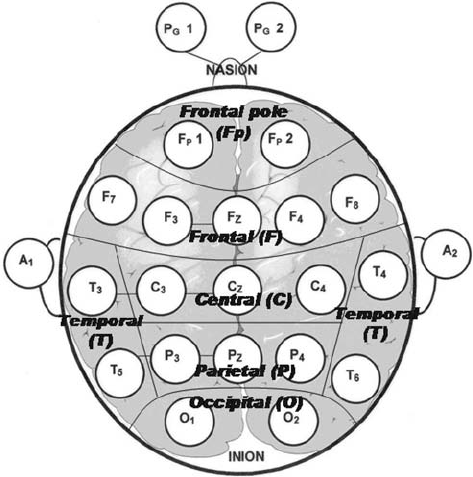
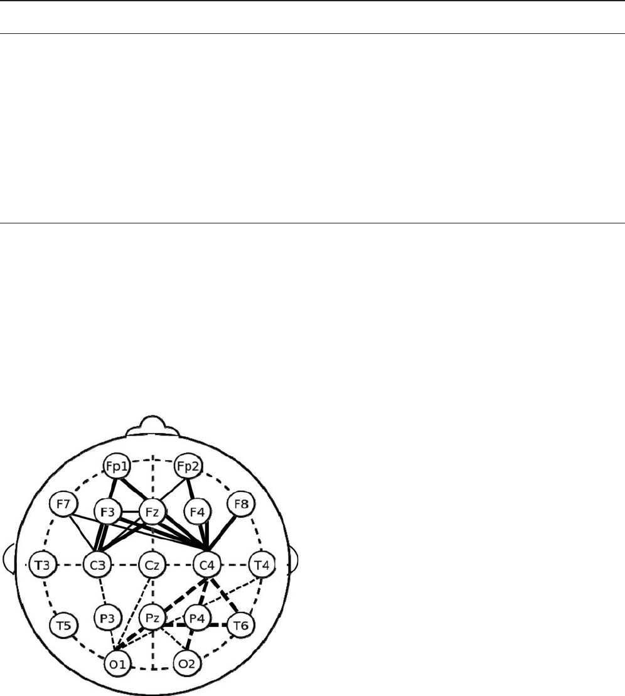

The Psychological and Neurological Bases of Leader Self-Complexity and
Effects on Adaptive Decision-Making
Sean T. Hannah
Wake Forest University
Pierre A. Balthazard
St. Bonaventure University
David A. Waldman
Arizona State University
Peter L. Jennings
Center for the Army Profession and Ethic, West Point,
New York
Robert W. Thatcher
University of South Florida and Applied Neuroscience Laboratories, St. Petersburg, Florida
Complex contexts and environments require leaders to be highly adaptive and to adjust their behavioral
responses to meet diverse role demands. Such adaptability may be contingent upon leaders having
requisite complexity to facilitate effectiveness across a range of roles. However, there exists little
empirical understanding of the etiology or basis of leader complexity. To this end, we conceptualized a
model of leader self-complexity that is inclusive of both the mind (the complexity of leaders’ self-
concepts) and the brain (the neuroscientific basis for complex leadership). We derived psychometric and
neurologically based measures, the latter based on quantitative electroencephalogram (qEEG) profiles of
leader self-complexity, and tested their separate effects on the adaptive decision-making of 103 military
leaders. Results demonstrated that both measures accounted for unique variance in external ratings of
adaptive decision-making. We discuss how these findings provide a deeper understanding of the latent
and dynamic mechanisms that underpin leaders’ self-complexity and their adaptability.
Keywords: leader complexity, self-complexity, neuroscience, adaptability
Leaders often operate in complex situations in which they
grapple with dynamic social systems or networks and make deci-
sions pertaining to erratic and changing internal and external
environments. Inevitably, these changing situations create unpre-
dictability and tension that leaders are required to negotiate to
achieve effectiveness. In order to respond to such demands, schol-
ars have suggested that more effective leaders possess a requisite
level of complexity that allows them to accurately perceive and
assess these complex and changing dynamics, and in turn, adapt
their decision-making and behaviors to enact effective responses
(e.g., Denison, Hooijberg, & Quinn, 1995; Zaccaro, Gilbert, Thor,
& Mumford, 1991).
We seek to advance an understanding of what constitutes leader
complexity because it may be a key enabler of adaptation (Hooi-
jberg, Hunt, & Dodge, 1997). Based on his review of the adapta-
tion literature, Chan (2000, p. 4) stated that adaptation “refers to
the process by which an individual achieves some degree of fit
between his or her behaviors and the new work demands created
by the novel and often ill-defined problems resulting from chang-
ing and uncertain work situations.” Note that this definition does
not specify the attributes that make an individual more or less
capable of adaptation, that is, an individual’s level of adaptability.
While scholars generally agree on definitions of adaptation as
entailing the process of establishing behavioral fit with changing
and novel situations, according to Chan (2000), there is much less
consensus as to what makes an individual more or less adaptable.
To advance an understanding of adaptability as applied to leader-
ship, we present and test a theory of leader complexity as a
predictor of leader adaptation to change.
We define leader adaptability as the capacity of leaders to
adjust their thoughts and behaviors to enact appropriate responses
to novel, ill-defined, changing, and evolving decision-making sit-
uations (Chan, 2000; Denison et al., 1995; Paulhus & Martin,
1988; Pulakos, Arad, Donovan, & Plamondon, 2000). Greater
levels of complexity promote leaders’ ability to both differentiate
This article was published Online First April 1, 2013.
Sean T. Hannah, Schools of Business, Wake Forest University; Pierre A.
Balthazard, School of Business, St. Bonaventure University; David A.
Waldman, W. P. Carey School of Business, Arizona State University; Peter
L. Jennings, Center for the Army Profession and Ethic, West Point, New
York; Robert W. Thatcher, Departments of Neurology and Radiology,
School of Medicine, University of South Florida, and Applied Neurosci-
ence Laboratories, St. Petersburg, Florida.
The authors thank the Defense Advanced Research Projects Agency
(DARPA) and the Center for the Army Profession and Ethic (CAPE) for
their support of this research. We also appreciate the assistance of Major
Paul Lester in organizing the sample for this study.
Correspondence concerning this article should be addressed to Sean T.
Hannah, Schools of Business, Wake Forest University, PO Box 7659, Wor-
rell Professional Center, Winston Salem, NC 27109. E-mail: hannahst@
wfu.edu
Journal of Applied Psychology © 2013 American Psychological Association
2013, Vol. 98, No. 3, 393–411 0021-9010/13/$12.00 DOI: 10.1037/a0032257
393
the various sources of inputs and stimuli in the environment and to
integrate those inputs with existing cognitive and affective struc-
tures to enable adaptive responses (R. G. Lord, Hannah, & Jen-
nings, 2011; Zaccaro, Foti, & Kenny, 1991). Differentiation refers
to the capacity to determine the various unique dimensions under-
lying a particular perceptual domain. Yet differentiation promotes
integration, the capacity to perceive the relationships or correla-
tions among these dimensions (e.g., the patterns, linkages, or
themes existing between concepts) and to synthesize them to
achieve a deeper level of situational awareness and understanding
in dynamic and changing contexts (Streufert & Nogami, 1989;
Weick & Bougon, 1986).
Based on a complexity approach, Day and Lance (2004) argued
that leader development is similar to the growth of an organism as
it matures and achieves greater complexity over time, thereby
leading to its successful adaptation to a changing environment.
Accordingly, an examination of psychological and neurological
markers of leader complexity is an important first step in advanc-
ing leader development along these lines. While a limited set of
theories of leader complexity have been offered (e.g., Hooijberg et
al., 1997; R. G. Lord et al., 2011), they have not been operation-
alized, leaving leader complexity an underdeveloped and untested
concept.
In the current investigation, we specifically examine leader
self-complexity (LSC), which is based on the self’s central role in
managing the interface between a leader’s internal processes (e.g.,
goal systems, self-regulation, and identity) and his or her interac-
tions with the social environment (Hannah, Woolfolk, & Lord,
2009). The self provides the structure through which leaders or-
ganize their various social roles and the knowledge, skills, abili-
ties, and self-regulatory systems associated with those roles (R. G.
Lord & Hall, 2005; R. G. Lord et al., 2011). We propose that
greater levels of complexity enhance a leader’s ability to compre-
hend and react adaptively to dynamic decision-making situations
(Hannah, Lord, & Pearce, 2011).
To formulate an etiology of LSC, we include both psychometric
and neurological processes, of which the latter are considered to be
the foundations of mental activity and behavior (Bear, Connors, &
Paradiso, 2006). We employ a multimethod approach (Podsakoff,
MacKenzie, Lee, & Podsakoff, 2003) to form and test hypotheses
specifying that there are both psychological and neurological
markers of LSC. Specifically, we incorporate techniques from
clinical and social psychology (Linville, 1987; Woolfolk, Gara,
Allen, & Beaver, 2004) to create an index of psychological LSC.
Further, we use a neuroimaging technique (quantitative electroen-
cephalography, or qEEG) to derive a neurologically based index of
intrinsic brain activity in regions and frequencies that support
self-relevant knowledge and information processing, self-
regulatory functions, decision-making, and behavior (for reviews,
see Banfield, Wyland, Macrae, Munte, & Heatherton, 2004;
Lieberman & Eienberger, 2004; Lieberman & Pfeifer, 2005). We
hypothesize that neurological LSC, as a derivative of relatively
stable brain functionality, enhances leaders’ adaptability through
providing the capacity to process and effectively respond to dy-
namic, changing and unpredictable situations (Daffner et al.,
2003), reduce ambiguity and make meaningful decisions (Dama-
sio, 1996), and manage other aspects of social conduct and emo-
tional processing (Tranel, Bechara, & Denburg, 2002). Finally, we
assess the influence of psychological and neurological LSC on
leader adaptability, operationalized as adaptive decision-making in
dynamic leadership scenarios. In short, this study seeks to serve as
a first step in achieving a greater understanding of what constitutes
LSC and its outcomes.
The Psychological Bases for Leader Self-Complexity
and Adaptive Decision-Making
The Nature of Psychological Leader Self-Complexity
In general, cognitive complexity provides an individual the
capacity to effectively differentiate, as well as integrate, perceptual
and abstract information in those domains for which he or she is
complex (Streufert & Nagami, 1989; Streufert & Swezey, 1986).
By domain, we refer not to narrow tasks or groups of tasks, but as
we describe further below, expanded role sets. Based on his or her
training, education and experience, a leader may, for example,
become complex in the role sets associated with the general
domain of military leadership and be relatively less complex in the
domain of business leadership. Hannah, Lord, and colleagues
(Hannah et al., 2009, 2011; R. G. Lord et al., 2011) extended the
more general prior theoretical work on leader complexity (e.g.,
Denison et al., 1995; Hooijberg et al., 1997) by highlighting the
central role of LSC in driving leader effectiveness and perfor-
mance.
LSC builds upon clinical and social psychological research
areas, including self-complexity and identity theories, information
processing and self-regulation theories, and role theory. First,
self-complexity theory assesses the self-concept as a highly dif-
ferentiated structure that uniquely drives information processing
and self-regulation (Linville, 1987; Linville & Carlston, 1994;
Woolfolk et al., 2004). This is because the self-relevant knowledge
that composes self-complexity is unique compared to other forms
of cognitive complexity in its greater richness and salience (Kihl-
strom & Klein, 1994) and thus imposes significant effects on
information processing and self-regulation (Stahlberg, Peterson, &
Dauenheimer, 1999; Verplanken & Holland, 2002). Further, the
self has been found to have unique neurological underpinnings
(e.g., Kelley et al., 2002; Platek, Keenan, Gallup, & Mohamed,
2004; Platek, Wathne, Tierney, & Thomson, 2008), as we hypoth-
esize in the next section.
LSC reflects the level of richness and complexity with which
leaders psychologically structure their self-concepts (Hannah et
al., 2009). Specifically, the self-concept can be defined as more or
less complex based on the breadth of roles (e.g., team leader,
mentor, spokesperson) with which leaders characterize them-
selves, as well as the breadth of self-aspects contained in each role
(e.g., skills, traits, attributes, and self-regulatory structures). LSC is
thought to be critical for leader effectiveness because the self
serves as the interface between the surface-level observable traits
and behaviors that leaders exhibit and the deeper metacognitive
structures that enable leaders to construct a sophisticated under-
standing of situations and that drive a broad repertoire of thoughts
and behaviors (R. G. Lord & Hall, 2005; R. G. Lord et al., 2011).
The self-concept is thus central to leader self-regulation and per-
formance. As noted by Kihlstrom and Klein (1994, p. 194), the self
is “the point at which cognitive, personality, and social psychology
meet.”
394
HANNAH, BALTHAZARD, WALDMAN, JENNINGS, AND THATCHER
LSC is also based on role theory. A role refers to a cluster of
behaviors, skills, attitudes and other factors that are thought to
belong together and enable functioning in a given social context
(Turner, 2002). Individuals occupying a particular position, e.g.,
military commander, are likely to develop an expanding role set
over time, whereby new subroles arise through experience as a
way to successfully deal with the demands of the various situations
that they face in that role (Karaevli & Hall, 2006). Over time, these
competencies become integrated and organized into increasingly
multifaceted sets of knowledge structures that are integrated with
the leader’s identity and with goals, self-regulatory plans, and
other self-aspects that expand LSC (R. G. Lord et al., 2011).
For example, research with U.S. Army cadets and junior officers
(Hannah, Jennings, & Ben-Yoav Nobel, 2010) suggests that offi-
cers may begin their careers with a fairly ill-defined self-concept
as a military leader, and through training, education, and the facing
of various role demands over time, they are likely to create more
refined subroles such as tactical warfighter, tactical civil affairs
manager, diplomat and negotiator, intelligence manager, and troop
and unit leader. Further, each subrole is populated with a necessary
set of self-aspects that expand over time to meet the role require-
ments of each subrole. LSC thus represents an idiosyncratic,
hierarchical cognitive structure formed through social learning
(Bandura, 1977). This is consistent with Day and Lance’s (2004)
view of leader development as being similar to an adapting organ-
ism, gaining complexity over time in response to the environment,
with increasingly expanding LSC to meet role demands.
LSC is therefore built in part as leaders’ self-concepts be-
come more differentiated over time; yet it is important to
recognize that differentiation and integration are not orthogo-
nal, but represent opposite sides of the LSC “coin.” That is,
differentiation allows the leader “to see color, shapes, and
shades of gray on the canvas of social context,” whereas inte-
gration allows the leader “to focus on whole objects in order to
form a coherent, meaningful picture from among the colors,
shapes and shades” (Hooijberg et al., 1997, p. 385). This is
because the rich perceptual lens provided by differentiation
enhances leaders’ capacity to find commonalities and themes
across differentiated factors and better perceive both the surface
structures and deep structures of leadership problems (Smith,
Ford, & Kozlowski, 1997). This, in turn, allows the leader to
understand how their knowledge, skills, abilities and other
attributes are related to and can be applied to challenges
(Karaevli & Hall, 2006; R. G. Lord et al., 2011).
Finally, it is important to distinguish self-complexity theory
(Linville, 1987), upon which LSC is based, from social identity
complexity, which is based on social identity and social cate-
gorization theories. In their seminal article introducing the
social identity complexity construct, Roccas and Brewer (2002,
p. 94) stated that these two constructs “differ in the type of
knowledge at their focus: self-complexity refers to the structure
of the perception of personal attributes, whereas social identity
theory refers to the perception of in-groups.” By in-groups, they
refer to “large, symbolic groups [with] collective identities that
are depersonalized” (Roccas & Brewer, p. 89), such as race,
ethnic, religious, socioeconomic, and other social categoriza-
tions. They propose that individuals can have more or less
complex representations as to their membership in such various
social categories.
Psychological Leader Self-Complexity and Adaptive
Decision-Making
Pulakos and colleagues (Pulakos et al., 2000, 2002) proposed
that adaptability, operationalized as adaptive decision-making
here, can be described through behavioral dimensions that include
solving problems creatively, dealing with changing, uncertain, or
unpredictable work situations, and handling emergencies or crisis
situations. Adaptive decision-making consists of high levels of
situational awareness, coupled with the ability to use that aware-
ness to guide the formation of decisions that positively and ac-
tively address the situation at hand in an adaptive manner. Endsley
(1995a, p. 65) defined situational awareness as “a person’s per-
ception of the elements of the environment within a volume of
time and space, the comprehension of their meaning and the
projection of their status in the near future.” An application of the
three stages of situational awareness from the work of Endsley
(1995a, 1995b) to adaptation would specify that the leader be
capable of (a) perceiving both that changes are occurring in the
environment and key information relevant to those changes, (b)
interpreting that information and integrating it with the leader’s
goals to comprehend the implications that those changes have for
the leader’s current actions and strategies, and (c) making predic-
tions as to future events and system states that are likely to occur
in the changed context. From this heightened state of awareness,
leaders then employ existing knowledge to choose new actions and
strategies that will reestablish fit and effectiveness in the changed
context.
Such adaptive decision-making is supported by underlying
knowledge, skills, abilities, and other characteristics (KSAOs) that
vary in their necessity across different situations. We argue that
LSC provides the superordinate structure for these KSAOs and
other self-aspects (e.g., self-regulatory and metacognitive struc-
tures) ordered across roles and subroles. LSC is thus an individual
difference underpinning leader adaptability.
To link LSC to leader adaptive decision-making, we start with
the concept of leader requisite complexity (Hannah, Eggers, &
Jennings, 2008), which derives from Ashby’s (1956) law of req-
uisite variety. It holds that to effectively regulate a system, the
complexity in the leader must be sufficient, i.e., is requisite relative
to the level of complexity in the system being regulated. Hannah
et al. (2009) proposed that this occurs because a more complex
structuring (i.e., differentiation and integration) of the self will
provide leaders with a more expansive repertoire of identities and
associated skills and other self-aspects, which they can then access
and employ to enhance their adaptability across changing situa-
tions.
As LSC includes not just knowledge and skills but also associ-
ated self-regulatory and metacognitive structures, LSC will enable
individuals to recognize novelty or change, select potential re-
sponses, monitor and evaluate progress, and create different re-
sponses to the task if necessary—all of which are critical aspects
of adaptability (Bell & Kozlowski, 2002, 2008). Further, we note
that LSC facilitates integration, the recognition of the deep struc-
tural features of tasks and problems, which Chan (2000) suggested
are critical components of adaptability. The structural features of a
problem are functionally related to outcomes or goal attainment
(Gick & Holyoak, 1987), and an understanding of these deep
structures allows the leader to identify situations in which existing
395
PSYCHOLOGICAL AND NEUROLOGICAL LEADER COMPLEXITY
behaviors may or may not apply. When they do not apply, a more
complex leader can select and transfer other appropriate behaviors
from his or her repertoire or create new ones (Holyoak, 1991;
Kimball & Holyoak, 2000). A less complex leader may either not
comprehend the deep structure of a given problem or have a lesser
repertoire of KSAOs to apply to the problem, leading to an
inappropriate or ineffective response. In a military situation, for
example, a less complex leader may respond with lethal force,
while a more complex leader may understand that negotiation is
more appropriate, as well as be able to access the related attributes,
skills, and self-regulatory structures that facilitate the needed ne-
gotiation behaviors. Indeed, Paulhus and Martin (1988) noted that
having a wide repertoire of knowledge, behaviors, and strategies is
common across various conceptualizations of adaptability (cf.
Chan, 2000).
The learning that underlies such leader adaptability includes
both task learning and personal learning, of which the latter en-
hances one’s understanding of him or herself, one’s identity,
capabilities, and other attributes related to task accomplishment
(Karaevli & Hall, 2006). The self thus serves as the interface
between the behaviors that leaders exhibit and the deeper struc-
tures that drive adaptive performance (R. G. Lord & Hall, 2005).
R. G. Lord et al. (2011) provided a model to explain the emergence
of complexity within leaders and resultant adaptation. They pro-
pose that as leaders face task demands, identity structures are
primed that “set off” the initiation of self-regulatory functions
across five hierarchical levels: (a) perception, (b) consciousness,
(c) goal emergence, (d) affect systems, and (e) at the highest level
of the hierarchy, these lower structures aggregate to activate a
tailored working self-concept (WSC). The WSC “grounds self-
regulation in social constraints, active roles, value systems, and
past experience; creates a storehouse of autobiographical experi-
ences and draws upon these experiences to guide actions; activates
relevant emotions . . . [and thus] . . . both exploration of the current
environment and exploitation of past learning are facilitated”
(R. G. Lord et al., 2011, p. 8). Critical to adaptive decision-
making, the self constrains information processing, since leaders’
level of complexity binds their ability to employ a tailored WSC
and access expertise (Hannah et al., 2009).
Many decision-making challenges that leaders face are naturally
adaptive, rather than veridical. Veridical decision-making involves
the uncovering of the correct response according to the parameters
of the situation and regardless of the decision-maker’s goals. In
contrast, adaptive decision-making is leader-centered and is guided
by the leader’s goals and priorities (Goldberg & Podell, 2000).
Thus, leaders who can best access an expanded set of relevant
knowledge and skills and self-regulatory structures to understand
problems and form tailored working self-concepts should be better
positioned to involve the self in the deliberations and guide the
process through their goals and priorities.
In sum, LSC facilitates adaptive decision-making by providing
a more differentiated set of role structures and associated attri-
butes. This set allows access to an expanded mix of relevant
knowledge and skills and self-regulatory structures to achieve
enhanced integration and thus a deeper understanding of problems,
forming a tailored WSC, which increases adaptability (R. G. Lord
et al., 2011). This leads to our first hypothesis:
Hypothesis 1: Leaders with higher levels of psychological
LSC will demonstrate higher levels of adaptive
decision-making.
We propose that the psychological component of LSC (the
“mind”) provides only a limited explanation of overall LSC. In
proposing future directions for their theory of LSC, R. G. Lord et
al. (2011) recommended that neuroscience could improve our
understanding of LSC by illuminating neurological capacity for
LSC (the “brain”). By defining a broader construct that identifies
the neural mechanisms that characterize LSC, we could potentially
guide leadership development and the measurement of leaders’
growth in complexity over time. That is, if areas of the brain, as
well as neurological variables emanating from the study of those
areas, can be associated with LSC, then we may gain insights into
developing and employing those brain capacities in leaders.
The Neurological Basis for Leader Self-Complexity
and Adaptive Decision-Making
The Nature of Neurological Self-Complexity of
Leaders
Electrical activity of neural cell assemblies occurs at a variety of
frequency ranges and spatial distributions across the brain
(Creutzfeldt, 1995; Elbert, 1993; Mitzdorf, 1991; Niedermeyer &
da Silva, 2005). Cacioppo et al. (2003) suggested that most com-
plex behavioral concepts, such as LSC, do not map onto a single
discrete spatial location in the brain but, instead, are likely to
reflect multiple parts of the brain acting across a distributed, but
interconnected network of neuronal regions (Cacioppo, Berntson,
& Nusbaum, 2008; Hagmann et al., 2008; Nolte & Sundsten,
2002). We propose that there is an inherent brain capacity or
structure relevant to neurologically based LSC, which is malleable
and developed through leaders’ experiences but is relatively stable
over time, providing a biologically based capacity for LSC.
This intrinsic capacity can be examined through brain activity
when an individual is in a resting (i.e., not processing discernible
stimuli), albeit in an awake state (Waldman, Balthazard, & Peter-
son, 2011). A growing body of neuroscience research suggests that
the neural pattern found when the brain is at rest reflects its core
functional connectivity and the inherent and stable brain function-
ing or capacity of an individual (Raichle & Snyder, 2007). Indeed,
Cacioppo et al. (2003) suggested that the brain in a resting state is
not passive but involves its own set of potentially meaningful
neural operations shown to include memory consolidation and
learning (Tambini, Ketz, & Davachi, 2010). Fox and Raichle
(2007) reported that at rest, brain activity patterns correspond to
patterns during task engagement. Waldman et al. (2011) further
proposed that the brain structure when at rest could reflect mean-
ingful leadership capacities, such as LSC.
To assess this intrinsic network as a basis for LSC we examined
three fundamental electrophysiological concepts that characterize
brain functioning: (a) characteristics of the electrical signal in
terms of frequency and amplitude, (b) spatial location of the
sources of brain electrical activity, and (c) pattern of connectivity
across the brain (neural network dynamics).
Amplitude and frequency. In general, the more relaxed or
inattentive a person is, the greater the amplitude and the lower the
396
HANNAH, BALTHAZARD, WALDMAN, JENNINGS, AND THATCHER
frequency of the waves in the brain. In contrast, the lower the
amplitude and the greater the frequency, the more likely it is that
the person is in an excited, working, or attentive state. The ampli-
tude and frequency of brain waves can be assessed with regard to
five bandwidths ranging from deep low arousal (e.g., inattentive,
sleeping) to high arousal (extreme alertness). These five band-
widths are from lowest to highest arousal levels: delta, theta,
alpha, beta, and gamma rhythms, respectively.
One of the most prominent bandwidths is the alpha rhythm, an
oscillation in the range of 8–13 Hz with an average peak of 10–11
Hz in healthy adults. Alpha rhythms are associated with relaxation,
contemplation, internal focus (e.g., the self), and mental perfor-
mance, both in healthy individuals and in individuals with neuro-
logical conditions (for reviews, see Angelakis, Lubar, Stathopou-
lou, & Kounios, 2004; Klimesch, 1997). Indeed, most of the EEG
studies examining task engagement, cognitive functions, and brain
complexity report activity in the alpha band, showing that alpha
activity is inversely related to mental effort (e.g., Burgess &
Gruzelier, 1997; Butler & Glass, 1976; Donchin, Kutas, & Mc-
Carthy, 1977; Glass, 1964; Gutiérrez & Corsi-Cabrera, 1988;
Nunez, 1995; Pfurtscheller, Stancak, & Neuper, 1996). Further,
recent research has shown that episodic memory, another cognitive
process related to brain complexity, exhibits patterns of activity in
the alpha frequency range (e.g., Hanslmayr, Spitzer, & Bäuml,
2009; Zion-Golumbic, Kutas, & Bentin, 2010). Accordingly, as we
explain in further detail in the methods section, we posit that neural
synchronies within the alpha range, particularly since they are
captured with the brain in its intrinsic state (i.e., a condition when
alpha waves are naturally prevalent), are appropriate to examine as
potential markers of neurological LSC.
Spatial location. Beyond defining the appropriate frequency
to emphasize in our analyses, identifying parts of the brain that are
theoretically associated with LSC is also an important consider-
ation. LSC is derived from leaders’ abilities to execute increas-
ingly complex cognitive processes that provide the requisite com-
plexity to effectively comprehend, adjust to, and engage with the
environment (Hannah et al., 2009; R. G. Lord et al., 2011). By
understanding neurologically the locations where cognitive func-
tions associated with LSC occur (e.g., perception, consciousness,
goal emergence, affect, and the self—including self-knowledge,
self-regulation, and so forth), we seek to define a biological marker
of LSC.
Several studies have used a neurological approach to identify, at
least in part, the frontal lobes as a key location for the mental
representation of knowledge about the self and self—related judg-
ments (e.g., Craik et al., 1999; Devue et al., 2007; Esslen, Metzler,
Pascual-Marqui, & Jäncke, 2008; Klein et al., 2009; Klein, Rob-
ertson, & Delton, 2010; Mu & Han, 2010; Platek et al., 2004,
2008; Shi, Zhou, Liu, Zhang, & Han, 2011; Symons & Johnson,
1997; for reviews see Lieberman & Eienberger, 2004, and Lieber-
man & Pfeifer, 2005). An overarching proposition in these studies
is that the self can be conceptualized as a complex knowledge
structure characterized by at least two neurally and functionally
independent, component systems linked to the frontal lobes: (a)
episodic memory (i.e., the memory of time, places, associated
emotions, and other contextual knowledge that can be explicitly
stated) and (b) semantic memory (i.e., memory of meanings and
understandings, and other concept-based knowledge unrelated to
specific experiences; e.g., Klein & Loftus, 1993; Klein, Loftus, &
Kihlstrom, 1996; C. G. Lord, 1993; Tulving, 1993).
Episodic memory contributes to self-knowledge by enabling the
leader to recall specific events and experiences that occurred in his
or her past. It provides a personal narrative and a sense of self in
relation to these events through time. By contrast, semantic mem-
ory is made up of generic, context-free knowledge, enabling the
leader to know facts and generalizations about his or her traits,
dispositions, capabilities, and other attributes without having to
consciously recollect specific episodes upon which that knowledge
is based.
Executive function is yet another neural process based in the
frontal lobes that is central to the neurobiology of LSC. It helps
connect past experiences with present action and synchronizes the
activities of other cognitive processes to accomplish a task. With
respect to LSC, executive function is an umbrella term for com-
patible cognitive processes, such as planning, strategizing, paying
attention to and remembering details, problem solving, managing
time and space, and initiation and monitoring of actions (Ben
Shalom, 2000; Davidson & Irwin, 1999; Grady, 1999; Kelley et
al., 2002; Vogeley, Kurthen, Falkai, & Maier, 1999), to include
judgments about the self (Lieberman & Eienberger, 2004; Lieber-
man & Pfeifer, 2005). Thus, the capacity of a leader to richly store
and effectively employ memory systems in conjunction with ex-
ecutive functioning may represent a neurological basis for LSC.
Substantial research has defined various neural coordinates for
these memory and executive functioning processes that we suggest
facilitate LSC. The frontal cortex, especially in prefrontal areas, is
understood to be the seat of executive functioning (Chow &
Cummings, 1999; Kaufer & Lewis, 1999) and the executive con-
trol of behavior (Goldstein, 1944; Jastrowitz, 1888; Luria, 1980).
The frontal cortex is the top of a hierarchy of neural structures that
integrate external information and internal states for the represen-
tation, temporal organization, and the execution of complex mental
and behavioral responses to environmental challenges, such as
those involved in leadership (Case, 1992; Fuster, 1999). The
frontal cortex is connected with nearly all other cortices, subcor-
tical structures, and brain stem nuclei, allowing it access to and
control of a breadth of cognitive resources (Fuster, 1993, 1999). A
substructure known as the ventromedial prefrontal cortex has also
been shown to work in cooperation with limbic areas as a regulator
of emotion for efficient mental functioning in the pragmatics of
social life, including the self-regulation of agency and goal-
directed activity, social self-awareness, decision-making, and
moral behavior (Anderson, Bechara, Damasio, Tranel, & Damasio,
1999; Damasio et al., 2000). Further, Shi et al. (2011) and Esslen
et al. (2008) localized first-person perspectives and self-referential
content in the medial frontal lobes and anterior cingulate gyrus
(i.e., medial surface of the frontal lobes).
Additionally, neuroimaging studies of episodic memory (for
instance, hemispheric encoding and retrieval asymmetry) have
indicated frontal lobe involvement (strongly interconnected with
limbic areas) with the left frontal hemisphere more involved than
the right in encoding, and the right more than the left in retrieval
(e.g., Habib, Nyberg, & Tulving, 2003). Evidence has also linked
the left prefrontal cortex, among other brain regions, to semantic
memory processes (Martin, 2001). Both episodic memory and
semantic memory require a similar encoding process, and while
semantic memories may originate in a personal context, a gradual
397
PSYCHOLOGICAL AND NEUROLOGICAL LEADER COMPLEXITY
transition from episodic to semantic memory can take place, in
which episodic memory reduces its sensitivity and association to
particular events so that the information can be generalized. Spe-
cific knowledge of the self can thus become more generalized over
time, facilitating its transfer to new situations. It is not surprising
then that they both rely on processes that reside in the frontal lobes.
Therefore, we conclude that many of the neurological capacities
required for LSC reside in the frontal lobes of the brain.
Connectivity. The third fundamental, electrophysiological
concept that we suggest provides the capacity for neurological
LSC entails the pattern of connectivity between sources of elec-
tricity across the brain. The study of connectivity can be used to
address the issue of functional communication in the cortex. Con-
nectivity refers to the extent that parts of the brain are working
together in a synchronous manner.
The importance of brain connectivity or synchronization in a
study of LSC is that it can reveal aspects of the level of complexity
that is present in the intrinsic network in the brains of leaders. For
example, connectivity reflects the strength of connections between
groups of neurons in different brain locations. The brain is com-
posed of local networks (group of neurons within 1 cm of each
other), as well as much longer networks (groups of neurons sep-
arated by more than 3 cm), that link local networks of neurons to
others (akin to a “hub and spoke” system used by major airlines).
These longer networks are formed over time as individuals de-
velop and create larger brain-scale systems that allow them to
recruit and process diverse knowledge and other resources from
various other local networks as needed (Breakspear, 2004;
Thatcher, North, & Biver, 2005, 2012; Bassett & Bullmore, 2006).
Increased distant differentiation, operationalized in terms of lower
connectivity or desynchronization, gives rise to increased com-
plexity during human brain development (Breakspear & Stam,
2005; Thatcher, 1998; Thatcher, Krause, & Hrybyk, 1986).
A leader with a more differentiated complex brain (represented
by lower connectivity or desynchronization) might have a richer
“hub and spoke” neurophysiological network, thereby providing
access to more distributed brain resources. Yet they would also
utilize this network more efficiently and in a more differentiated
manner. Efficiency of information processing is related to the time
delays in activity between synchronous groups of neurons, as well
as the complexity of neural networks in high-speed, long distance
neuron connections that coordinate the functional modules of the
brain (Hagmann et al., 2008; Thatcher et al., 2005, 2012). This
more differentiated brain is able to recruit resources from diverse
neural networks, form them into momentary processing structures
to address leadership task demands, and then efficiently release
those structures and recruit others as needed. Such processing
occurs in milliseconds, creating a differentiated processing “land-
scape” across the brain, as reflected in low levels of connectivity.
A less complex leader’s brain would show higher levels of con-
nectivity, whereby greater expanses of the brain are indiscrimi-
nately locked together in the same amplitude and frequency, leav-
ing fewer resources for other leadership processing tasks. As a
simplification or analogy, this is akin to a single-core versus a
multicore computer processor chip that allocates differentiated
resources to task demands. As described earlier, this greater neu-
rological differentiation then facilitates cognitive integration, or
the ability to determine surface and structural components of task
challenges and develop more holistic perceptions.
In sum, we propose a neurological marker of LSC by combining
the three fundamental electrophysiological concepts described
above. That is, the prior research that we reviewed suggests that an
appropriate neurological marker of LSC can be developed by
assessing the level of connectivity in the alpha range, situated in
the intrinsic neural network of the frontal lobes of the brain, where
self-relevant memory and executive function processing are cen-
tered.
Neurological Leader Self-Complexity and Adaptive
Decision-Making
Initial forays to understand potential connections between neu-
rological structures and decision-making can be seen in systematic
examinations of medical patients with well-defined brain lesions
(for reviews, see Bechara, 2004; Damasio, 1996). This body of
work not only identified brain regions essential for adaptive
decision-making but also provided conceptual models of critical
aspects of decision-making, for example, the somatic marker the-
ory which indicates the intensity and valence of a stimuli experi-
enced by the decision-maker (Damasio, 1996). A variety of re-
gions are likely to be involved in different functions relevant to
adaptive decision-making, such as parietal lobes in computation
(Dehaene, Spelke, Pinel, Stanescu, & Tsivkin, 1999) and in as-
sessment of probability (Ernst et al., 2004; Shadlen & Newsome,
2001), anterior cingulate cortex associated with processes of un-
certainty (Critchley, Mathia, & Dolan, 2001; Elliott, Rees, &
Dolan, 1999) and the integration of successes and errors over time
(Carter et al., 1998). However, regions of the prefrontal cortex, not
surprisingly, have been found to be especially critical for adaptive
decision-making (Christakou, Brammer, Giampietro, & Rubia,
2009).
We have described leaders with higher brain complexity in the
frontal lobes (i.e., lower connectivity in the alpha frequency range)
as having richer semantic and episodic memory, as well as en-
hanced executive functioning. Such leaders will be able to access
a more diverse set of cognitive resources across long range neural
network connections, form them into momentary processing struc-
tures, and then efficiently release those structures and recruit
others as needed to enhance the perception and processing of
leadership tasks. Adaptive experts practice such flexible switching
among alternate possible strategies, versus conducting some form
of sequential search strategy (Kimball & Holyoak, 2000). Leaders
who can only recruit from a limited knowledge base, in contrast,
engage in less information search and are more bounded in their
reasoning (Cyert & March, 1963). Enhanced executive function-
ing, such as metacognitive ability, also facilitates the ability to
transfer expertise gained from prior experiences to new experi-
ences and has been shown to enhance adaptability (Smith et al.,
1997). This is because lower connectivity in the alpha range
provides access to a richer set of expert knowledge structures and
effective executive functioning, which, in turn, allows leaders to
differentiate and thus perceive the complexity of a problem. It also
allows the leader to integrate those perceptions to determine the
underlying structural components of new or novel tasks. They can
then assess the applicability of, or modify, expertise gained from
experience with prior tasks to a new task that has a similar
structural base, enhancing their adaptability across situations.
398
HANNAH, BALTHAZARD, WALDMAN, JENNINGS, AND THATCHER
The process described above represents the highest form of
transfer of expertise as described by Smith et al. (1997, p. 109),
which occurs through “adapting different methods from those
learned in training and using existing knowledge to generate new
approaches and strategies,” also referred to as adaptive expertise
by Kimball and Holyoak (2000). Importantly, highly complex
individuals may exhibit what has been called metacomplexity
(Streufert & Nogami, 1989), which represents the ability to not
only assess the complex factors present in a situation, but then
determine when a more or less simple or complex processing mode
and solution is needed. They may in essence be able to make sense
out of chaos and realize that the deep structural features of problem
indeed allow a quite simple response. We believe this capacity to
be reflective of neural patterns showing lower connectivity in the
alpha range in the frontal lobes.
We also know that through the ability to recruit and process
richer cognitive resources, leaders can better link problem defini-
tions with solutions (Chi & Glaser, 1985). Finally, leader adapt-
ability has been proposed to require the integration of both task-
and self-relevant information (Karaevli & Hall, 2006), and thus the
self-regulatory capacities of the frontal lobes coupled with access
to rich self-relevant knowledge (e.g., Banfield et al., 2004; Klein et
al., 1996, 2010) would be critical in sponsoring adaptability.
In sum, we have established the possibility of neurologically
based LSC as a biological marker and relatively enduring individ-
ual characteristic based largely in the frontal lobes. We also
defined lower alpha connectivity in the frontal lobe as an appro-
priate measure for LSC, reflecting greater brain complexity, which
we propose will produce more adaptive decision-making. This
leads to our second hypothesis:
Hypothesis 2: Leaders with higher levels of neurological LSC
(i.e., less connectivity in the frontal lobes in the alpha range)
will demonstrate higher levels of adaptive decision-making.
Method
Participants
To test our hypotheses, we secured a sample with relevant
experience in the same general domain of leadership (i.e., military
leadership). We recruited a diverse sample of volunteer military
leaders, seeking participants representing a span from low to high
levels of experience, from an Army training base in the Eastern
United States. The sample consisted of 103 leaders ranging in rank
from officer cadet to major (87 male and 16 female; average age ϭ
23.9 years [range of 19 to 39, SD ϭ 5.9]; and with 4.2 average
years of military leadership experience [range of 1 to 18, SD ϭ
4.7]). There were 74 officer cadets in the sample, including 13 with
previous combat experience as former enlisted personnel, along
with 29 captains and majors with significant and recent combat
experience. All participants had participated in tactical military
training, such as combat simulations and field exercises.
Procedures and Measures
Volunteers were solicited through announcements made during
training classes. They were instructed to sign up for time slots,
with two slots per hour available over a 2-week period. The
sign-up sheet instructed them to report to a designated room for a
“leadership study,” but they were not provided any details as to the
theoretical nature of the research. As the researchers were limited
to one qEEG device and technician, when participants arrived at
the designated room, they were randomly assigned to either the
“psychometric only” or “brain mapping” protocol, each in a sep-
arate room. During any time slot in which only one participant
signed up, that person was assigned to the brain mapping protocol
to maximize the use of the EEG system. Of the 103 participants, 67
completed both the psychological and neurological protocols, the
latter while wearing the 19 channel EEG system. Both groups
proceeded through the same set of tasks that included, in order,
medical prescreening (e.g., assessing past injuries, mental health,
use of prescription drugs, and so forth, as needed for possible
exclusion from sample), answering demographic and military ex-
perience questions (correlates of self-complexity), completing a
standardized self-report role/attribute exercise to assess self-
complexity psychometrically, and processing a military scenario to
assess adaptive behavior, which was later expert-coded. The use of
qEEG, self-report exercise, and externally coded responses pro-
vide a multimethod procedure to limit common method biases
(Podsakoff et al., 2003).
Psychological leader self-complexity measure. We devel-
oped a standardized self-complexity measure for the specific mil-
itary leadership domain using a combination of the paper-and-pen
technique of Woolfolk and colleagues (Woolfolk et al., 2004;
Woolfolk, Novalany, Gara, Allen, & Polino, 1995) and the free
response format of Linville (1987). Consistent with Linville
(1987), to limit demand characteristics, we did not provide partic-
ipants with any leadership role labels but allowed them to produce
leadership roles consistent with their identity in free response.
Participants were asked to envision themselves as leaders of a unit
in combat, and then list and provide a one or two sentence
definition of the various roles that they saw themselves as pos-
sessing in that context. Requiring role definitions served to evoke
deeper processing and thus activate in participants the attributes
related to each role (Higgins, Van Hook, & Dorfman, 1988).
Consistent with Woolfolk et al. (1995, 2004), participants were
then provided with a number of pages (one page for each role that
they defined), with each page containing 33 leader attributes listed
in a column. These leader attributes were drawn from the referent
structure developed by Hannah et al. (2010), which these research-
ers derived from a series of in-depth interviews with experienced
tactical military leaders. From their grounded research, Hannah et
al. (2010) discovered that these are primary attributes that enable
leader effectiveness in a tactical level combat context, but they also
proposed, based on self-complexity theory, that these attributes
should be structured across various identity roles (i.e., self-
complexity) to enable leaders to tailor their employment. It is
important to note that the attributes drawn from this referent
structure are not meant to be exhaustive, but only represent the
general domain of interest (tactical military leadership), and they
serve as a proxy for complexity in this domain.
Next to each attribute, participants were asked to “answer how
important each attribute is to how you describe yourself in the role
. . . in essence how important is that attribute to your self-concept
in that role.” The response used a 3-point scale: not important ϭ
0, important ϭ 1, or very important ϭ 2. As practiced by Woolfolk
et al. (2004), separate pages were used for each role to encourage
399
PSYCHOLOGICAL AND NEUROLOGICAL LEADER COMPLEXITY

participants to reflect upon how each attribute applies to a given
role separately and more intently. For analysis, however, the
columns from each page were collapsed by the researchers into a
single matrix wherein participant scores create a roles ϫ attributes
matrix of data, with cell entries of 0, 1, and 2. The h-statistic
(Attneave, 1959; Scott, 1969) is the measure of self-complexity
that we used to analyze the matrix. Conceptually, h represents an
index of the amount of independent dimensions underlying the set
of attribute ratings. Participants would have a higher h score, for
example, when they rate themselves as having more self-aspects
(roles) and a greater differentiation of self-attributes between roles.
In the current study, a more differentiated leader would, for
example, organize those attributes and abilities more associated
with a role of tactical commander (e.g., those related to establish-
ing purpose and control in their unit under stress) separate from
those attributes associated with a role of diplomat (e.g., those
related to mediating conflict between groups). A less complex
leader may, for example, possess a limited set of roles as well as
a less robust and less differentiated set of attributes across those
roles (e.g., primarily possessing tactical commander attributes
across a limited set of roles). Based on our hypothesis develop-
ment, this less complex leader would be less adaptive and more
likely to be limited to warfighter-oriented behavioral repertoires in
response to leadership challenges, even though the situation may in
fact call for a nonwarfighting (e.g., diplomatic) response.
Neurological leader self-complexity measure. We applied
electrophysiological measures derived from power spectral analy-
sis of electroencephalography (also referred to as quantitative EEG
or qEEG methodology) to develop a numerical index representa-
tive of leader self-complexity. The index corresponds to the aver-
age connectivity (limited to the alpha frequency range) across
electrode pairs found in the frontal lobes of the brain, as defined
below.
To obtain these neurological data, EEG electrodes were placed
on the head at the 19 scalp locations specified in the International
10 –20 system of electrode placement (Jasper, 1958). See Figure 1
and the Appendix for an overview of EEG electrode placement and
methodology. Participants were seated in an upright position and
encouraged to relax but to sit as still as possible and minimize eye
movement (especially blinking). Data collection began when the
observation of participants’ raw EEG on the computer monitor
indicated that eye and other movement artifacts were minimized.
An EEG segment of at least 3 min was recorded at a digitization
rate of 128 Hz during an eyes-closed resting (but alert) condition
for all participants. Each EEG record was visually examined and
edited to remove artifacts while supported by the Neuroguide
software (Applied Neuroscience, St Petersburg, FL), which main-
tains artifact rejection routines for eye movements, drowsiness,
and instances where EEG voltage in any channel exceeds patterns
that are typical of the participant’s EEG. A resulting minimum of
60 s of artifact-free EEG was obtained for each participant. Split-
half reliability tests and test–retest reliability tests were conducted
on the edited EEG segments, and only when a record attained
reliability greater than .95 was it kept for the ensuing qEEG
spectral analyses.
As noted earlier, qEEG data collected in a baseline or at rest
state represent a more stable view of brain structures by recording
the brain’s intrinsic activity (i.e., activity not directly related to a
task, event, or stimuli), which may accurately reflect the capacity
of an individual (e.g., Raichle & Snyder, 2007). In a sense, the at
rest state would not be appropriate if the goal was to temporally
track executive functions or memory encoding and retrieval activ-
ities per se (e.g., extrinsic response to a stimuli). However, the
study of the intrinsic brain is preferable when the goal is to
examine the underlying structures that might allow for more en-
during brain functions, such as LSC.
Although several EEG metrics can be derived from brain elec-
trical waves, in line with our a priori conceptualization, we opera-
tionalized connectivity by applying the EEG coherence construct
in the alpha frequency range. EEG coherence is a statistical mea-
sure of the consistency of time or phase differences, and thus the
magnitude of coupling between cortical areas (i.e., refers to the
extent that parts of the brain are working together in a synchronous
manner; Thatcher et al., 1986). It is based on the similarity and
stability of electrical signals within a given frequency band across
those areas (Nunez, 1981; Rappelsberger & Petsche, 1988). Co-
herence is equivalent to the percentage of variance accounted for
and is often presented in the form of a percentage. For example,
90% alpha coherence indicates relatively high synchronous cou-
pling between brain locations at this frequency, while 10% alpha
coherence would indicate relatively low coupling or differentiation
between the locations at this frequency. A number of studies have
shown that coherence values are quite stable over time, demon-
strating typical test–retest reliabilities that are greater than .90
(e.g., Corsi-Cabrera, Galindo-Vilchis, del-Río-Portilla, Arce, &
Ramos-Loyo, 2007; Gasser, Jennen-Steinmetz, & Verleger, 1987;
Thatcher et al., 1986).
The functional role of alpha frequencies (e.g., 8–12 Hz) is still
debated in the neuroscience literature. Classically, it is considered
as the brain’s “idle rhythm,” sort of a standby state that allows the
system to return more rapidly to goal-oriented functioning when
Figure 1. Scalp placement and labels for electrodes used in the Interna-
tional 10-20 system.
400
HANNAH, BALTHAZARD, WALDMAN, JENNINGS, AND THATCHER
needed (Nunez, Wingeier, & Silberstein, 2001). Hans Berger
(1929) found early on that alpha activity increases during eyes
closed, especially at rest, and it decreases with eyes open (i.e., the
“Berger effect”). As is the case in our research, several more recent
imaging studies examining alpha waves have supported the notion
of an activated rest state by describing a network of activation that
is being diminished during goal-oriented tasks relative to no-task
(Gusnard & Raichle, 2001; Greicius, Krasnow, Reiss, & Menon,
2003; Raichle et al., 2001). An examination of alpha waves in a
rest state may thus provide an important marker of the underlying
capacity for LSC.
In sum, to emphasize the neural regions that have been associ-
ated with the processing of aspects of the self, executive and
memory functions, and complex cognitive processes of leadership
(e.g., Craig, 2009; Devue et al., 2007; Mu & Han, 2010; Platek,
2004; Shi et al., 2011), we calculated a different alpha coherence
value for electrode combinations in the frontal lobes (i.e., denoted
as Fp, F, and C regions in the international 10/20 system, see
Figure 1) that contained nodes in different subregions (i.e., Fp/F,
Fp/C, F/C). Thus, the 10 electrodes in the frontal lobes (i.e., Fp1/2,
F3/4, F7/8, C3/4, Cz, and Fz) produced 30 such combinations. We
then averaged the coherence scores from the frontal lobes into a
single coherence index to produce a measure of neurological LSC.
Adaptive decision-making measure. We examined the po-
tential importance of LSC by assessing adaptive decision-making
as a form of adaptive leadership performance. We measured adap-
tive decision-making by placing the participants through a four-
part tactical military scenario. The scenario was developed by two
West Point military leadership instructors (both with combat ex-
perience and 12 and 26 years of total military experience, respec-
tively) specifically for this study to ensure it had content validity
and presented participants with the key aspects of adaptive situa-
tions: changing situations, each with novel and ill-defined leader-
ship challenges (Chan, 2000). Specifically, each part of the four-
part scenario added progressively higher levels of ill-defined
factors, which increased situational complexity and decision-
making difficulty. The scenario is contextualized in terms of an
international humanitarian relief mission in Africa in which the
leader is in charge of a unit responsible for a security checkpoint
designed to guard a food distribution site. In each of the four parts
of the scenario, the situation progressively deteriorates, and more
complex and ill-defined aspects are added in each part, whereby
the participant is required to lead his or her unit to interact with
hostile and nonhostile civilians, feuding warlords, enemy forces,
the media, and eventually, the shooting down of a U.S. helicopter
near the checkpoint.
We utilized a “freeze technique” (Endsley, 1995a) to query
participants about their thinking in situ. Participants completed the
four-part scenario, one part at a time. In each part, the participant
received a piece of paper to read with that portion of the scenario
printed on it, and when ready, he or she was instructed to verbally
answer a short series of open-ended questions. Example questions
included, “Describe how you assess the situation and identify what
aspects of the situation stand out as most significant,” “What kinds
of information or intelligence have not been provided that would
be helpful to you in assessing the situation and developing alter-
native courses of action?” “What factors are most important to
your decision about what to do?” and “What alternative courses of
action are you considering in formulating your decision about the
downed helo?” Participant responses were audio-recorded, tran-
scribed, and content-analyzed.
Content analysis is a valid way to tap individuals’ underlying
decision processes, since the language that they use reflects their
cognition (Whorf, 1956; Winograd, 1983) and thus enables the
researcher to infer cognitive schemas (Huff, 1990; Woodrum,
1984). We followed Winograd (1983) to ensure reliable and valid
coding of the adaptive decision-making of the participants. A
structured coding protocol was developed based on a literature
review of military decision-making in tactical situations. Based on
this review, three indicators were operationalized: (a) situational
analysis, (b) decisiveness, and (c) positive action orientation.
Situational analysis reflected participants’ demonstrated situa-
tional awareness and adaptive thinking, based on their perception
and comprehension of the given environment, such as its shifting
surface and structural features, and formulation of responses (End-
sley, 1995a, 1995b; Matthews, Strater, & Endsley, 2004). Situa-
tional analysis also assesses the ability to effectively adjust one’s
thinking to the demands of unfolding events and changing circum-
stances and to apply one’s prior expertise to new situations based
on common structural elements (Pulakos et al., 2000, 2002; Smith
et al., 1997). In the context of the tactical scenario, we assessed
how well respondents adjusted their analysis as new information
was presented in each new part of the changing scenario, enabling
us to assess whether they adjusted their situational awareness and
adaptive thinking and their ability to make timely and effective
decisions regarding future events in the evolving environment
(Endsley, 1995b; Pulakos et al., 2000, 2002). For example, when
the situation deteriorated from a humanitarian assistance focus, to
the negotiation between feuding warlords, and to conflict with
hostile forces, we were able to assess if participants were able to
perceive and comprehend the shifting features and apply prior
expertise to the unfolding situation. Further, at two key points in
the tactical scenario, participants were asked to make explicit
decisions based on their situational analysis and to state what
orders they would give to their followers. Thus, along with situ-
ational awareness, raters evaluated two decision criteria: decisive-
ness in terms of whether the participant identified a clear and
well-articulated course of action to take, and positive action ori-
entation in terms of whether the decision reflected purposive
action to actively and effectively influence the situation.
A 3-point scale (low ϭ 1, moderate ϭ 2, or high ϭ 3) was used
to rate each of the three indicators (situational analysis, decisive-
ness, and positive action orientation) in each of the parts of the
scenario, with ratings averaged across the parts for each partici-
pant. Coding was conducted by two independent raters outside the
research team, each a former military officer with significant
experience and expertise with the type of tactical situation used in
our scenario. A training session was conducted to familiarize each
rater with the indicators and to practice on sample participant
responses. Practice coding protocols were discussed and more
refined coding rules were developed to eliminate ambiguity in the
coding rules. Each rater then independently coded each of the
participant transcripts in randomized order. After initial coding
produced a mean Cohen’s kappa ϭ .73, reflecting “substantial”
interrater reliability (Landis & Koch, 1977, p. 165), discrepant
scores between raters were identified, discussed and resolved using
a consensus approach in a second iteration, ultimately achieving
100% reliability (Bullock & Tubbs, 1987).
401
PSYCHOLOGICAL AND NEUROLOGICAL LEADER COMPLEXITY
Mastery experience measures. Leader adaptability is facili-
tated as leaders acquire experience within a general domain over
time and create role sets and associated attributes that form the
self-concept and its related components, such as KSAOs (Karaevli
& Hall, 2006; Streufert & Swezey, 1986). Further, work experi-
ence has been associated with higher levels of performance (see
Chan, 2000). Accordingly, we controlled for two experience indi-
cators in our analyses when predicting adaptive decision-making
to demonstrate that LSC contributes unique explanation in adap-
tation beyond simple experience. We used two measures of expe-
rience that we believed to be highly relevant to military tactical
adaptive decision-making. Participants reported their (a) years and
months of total military leadership experience and (b) whether
they had combat experience.
Results
Means, standard deviations and correlations for all study vari-
ables are shown in Table 1.
First, we assessed the relationship between our psychological
and neurological measures of LSC on the one hand, and leader
experience on the other. LSC is formed through experiential social
learning as leaders establish roles and role sets to meet leadership
task demands in a general domain. Therefore, both markers of LSC
should correlate with leader experience. As shown in Table 1, both
psychological LSC (r ϭ .15, p Ͻ .10 and r ϭ .25, p Ͻ .01) and
neurological LSC (r ϭ –.34, p Ͻ .01 and r ϭ –.29, p Ͻ .01) are
significantly related to military leadership experience and combat
experience, respectively. It should be noted that negative correla-
tion values stem from the fact that lower coherence values (i.e.,
differentiation or desynchronization) denote increased brain com-
plexity. These findings help provide evidence of the construct
validity of our LSC measures. Additionally, although psycholog-
ical and neurological markers of LSC were derived using different
methodologies and represent different or complementary dimen-
sions of LSC (i.e., a psychometric assessment versus a biological
capacity), both reflect forms of complexity, and as such, we expect
these two markers to correlate, which was supported (r ϭ –.29,
p Ͻ .05).
Hypothesis Testing
To test our hypotheses, we conducted a three-step multiple
regression in predicting adaptive decision-making, as shown in
Table 2. In the first step, we entered military leadership experience
and combat experience as control variables. We then added our
psychological LSC measure in Step 2a and our neurological LSC
measure in Step 3. In a separate model, we entered our control
variables with our neurological LSC measure (Step 2b) but without
the psychological LSC measure. All models significantly predicted
adaptive decision-making, and each successive step in the multiple
regression analysis explained significantly more variance. In the
model that included all control variables and predictors, we found
that both predictors produced significant beta coefficients. Ulti-
mately, the model that includes both LSC measures explained
variance in adaptive leadership beyond what is explained by either
traditional psychometric or neurological approach alone. In sum,
Hypotheses 1 and 2 are supported.
Supplemental Analyses
To examine the neurological LSC—adaptive decision-making
relationship (Hypothesis 2) in more detail, participants were sep-
arated into a high neurological LSC group (operationalized as one
standard deviation below the mean alpha coherence value for our
sample), versus a low neurological LSC group (operationalized as
one standard deviation above the mean alpha coherence value for
our sample). This allowed us to also assess whether extremely high
levels of neurological LSC in a nonclinical group of subjects (e.g.,
“normal”) is undesirable, such that too much complexity deterio-
rates adaptive decision-making. The high neurological LSC (e.g.,
low frontal alpha coherence) group was composed of 14 individ-
uals (mean alpha coherence ϭ 39.60, SD ϭ 2.52), while the low
neurological LSC (e.g., high frontal alpha coherence) group was
composed of 11 individuals (M ϭ 68.96, SD ϭ 6.41). A t test
revealed a significant difference between the resulting adaptive
decision-making scores (t ϭ 2.98, p Ͻ .01) between high LSC
(M ϭ 2.24, SD ϭ 0.39) versus low LSC (M ϭ 1.79, SD ϭ 0.35)
individuals.
As a second supplemental test of Hypothesis 2, we discrimi-
nated participants into two groups based on their ratings on the
adaptive decision-making measure and assessed their alpha coher-
ence patterns. To depict this relationship graphically (see Figure
2), we used a module of the Neuroguide software to compare via
t test the alpha coherence patterns of those identified as being the
most adaptive decision-makers (1 standard deviation above the
mean, n ϭ 14), versus the least adaptive decision-makers (n ϭ 10,
those at least 1 standard deviation below the sample mean). The
referent “brain” shown in Figure 2 is the high-adaptive group. The
solid lines represent electrode combinations across which the most
adaptive decision-makers have significantly less coherence (e.g.,
greater brain complexity) than those that are least adaptive, while
the dotted lines show those connections where they have more
coherence than the low-adaptive group. The intensity (i.e., width)
Table 1
Correlations for Constructs in the Study
Variable MSD 1234
1. Military leadership experience 4.18 4.67 —
2. Combat experience 0.39 0.49 .80
ءء
—
3. Psychological LSC (e.g., h) 2.48 0.89 .15
†
.25
ءء
—
4. Neurological LSC (e.g., frontal alpha coherence) 48.56 10.71 Ϫ.34
ءء
Ϫ.29
ء
Ϫ.29
ء
—
5. Adaptive decision-making 1.86 0.44 .36
ءء
.42
ءء
.30
ءء
Ϫ.35
ءء
Note. LSC ϭ leader self-complexity. N ϭ 103, except for cells involving neurological LSC, where N ϭ 67.
†
p Ͻ .10.
ء
p Ͻ .05.
ءء
p Ͻ .01. Two-tailed.
402
HANNAH, BALTHAZARD, WALDMAN, JENNINGS, AND THATCHER

of the lines indicates the level of significance of the t value of the
between-group comparison. The thickest lines reflect differences
at the p Ͻ .001 level, and the thinnest lines are at the p Ͻ .05 level.
The pattern supports the hypothesized relationship between the
neurological marker of LSC and adaptive decision-making.
Clearly, more complex frontal lobes in the alpha range suggest a
greater capacity for adaptability. Interestingly, there also seems to
be a noteworthy anatomical difference between the frontal lobes
and the posterior cortical regions as depicted by the collection of
dashed lines in the parietal and occipital lobes. These areas are
responsible for integrating sensory information and managing the
visual cortex—functions theoretically unrelated to self-complexity
or adaptability. In that light, it is important to note that the alpha
coherence in the frontal lobes is only marginally related (r ϭ –.18,
p Ͻ .10) to posterior alpha coherence and that posterior alpha
coherence is not correlated with adaptive decision-making (r ϭ
–.04, ns), supporting the discriminant validity of our neurological
marker of LSC.
Additionally, it could be argued that the coherence pattern seen
in the frontal lobes is indicative of a general activation pattern
simultaneously occurring in other brain areas that are not theoret-
ically related to neurological LSC. This would not be the case if
the neural activity was isolated to the predicted area, without a
concomitant pattern in theoretically unrelated regions. Following
the original approach of tabulating alpha coherence values for
electrode combinations of nodes in different subregions, we thus
created 12 different alternate neural indexes emphasizing various
brain regions besides the frontal lobes. An initial alternate index
was made up of the nine electrodes not in the frontal lobes and the
23 coherence combinations that they produced. Various other
indexes represented the temporal (left hemisphere, right hemi-
sphere, and interhemispheric indexes), parietal, and occipital
lobes. Other alternate indexes we tested involved multiple regions
together. None of these alternate indexes proved to be significantly
related to adaptive decision-making, and thus from a criterion
validity perspective, our supplemental analyses suggest that they
are not markers of neurological LSC.
Finally, it has been suggested that rhythms in different fre-
quency bands might be coupled because of the broad recurrent
connectivity among brain structures and associated functional op-
erations (Schanze & Eckhorn, 1997). Indeed, in this study, coher-
ence values in the alpha and beta frequency ranges are at least
Table 2
Multiple Regression Analyses
Model
Standardized
beta tRR
2
R
2
change FFchange
1
Military leadership experience .08 0.43 .36 .13 .13 4.62
ءء
4.62
ءء
Combat experience .29 1.60
†
2a
Military leadership experience .09 0.51 .43 .19 .06 4.87
ءء
4.82
ء
Combat experience .23 1.26
Psychological LSC (e.g., h) .26 2.20
ء
2b
Military leadership experience Ϫ.04 Ϫ0.19 .41 .17 .04 4.23
ءء
3.13
ء
Combat experience .29 1.64
†
Neurological LSC (e.g., frontal alpha coherence) Ϫ.24 Ϫ1.77
ء
3
Military leadership experience .03 0.14 .48 .23 .04 4.57
ءء
3.15
ء
Combat experience .22 1.27
Psychological LSC (e.g., h) .20 1.71
ء
Neurological LSC (e.g., frontal alpha coherence) Ϫ.22 Ϫ1.77
ء
Note. LSC ϭ leader self-complexity. Based on 67 observations. R
2
change tests for Models 2a and 2b are based on Model 1 as the baseline. R
2
change
test for Model 3 is based on Model 2a as the baseline.
†
p Ͻ .10.
ء
p Ͻ .05.
ءء
p Ͻ .01. Two-tailed.
Figure 2. t test comparison of alpha brain coherence between high and
low adaptive decision-making individuals. Note that solid lines indicate
less connectivity for high-adaptability compared to low-adaptability lead-
ers; dashed lines indicate more connectivity for high-adaptability compared
to low-adaptability leaders. Thick lines are significant at p Ͻ .01; thinner
lines are significant at p Ͻ .05.
403
PSYCHOLOGICAL AND NEUROLOGICAL LEADER COMPLEXITY
moderately correlated across the brain as a whole (r ϭ .54, p Ͻ
.01) and within subregions of the brain (i.e., r ϭ .57, p Ͻ .01 in the
left hemisphere; r ϭ .48, p Ͻ .01 in the right hemisphere; and r ϭ
.59, p Ͻ .01 interhemispherically). Since beta band oscillations
have also been detected in frontal lobe processes that are consistent
with those included in the neurological LSC marker, including
memory maintenance (Pesaran, Pezaris, Sahani, Mitra, & Ander-
sen, 2002), we examined the relationship between the equivalent
frontal lobe beta coherence index and the other primary constructs
in the study. Unlike the alpha index, the beta coherence index is
not significantly related to the psychological LSC marker (r ϭ
–.15, p Ͼ .10) or adaptive decision-making (r ϭ –.11, p Ͼ .10).
This pattern of correlations suggests that rhythms in the beta
frequency band are not directly relevant to neurological LSC.
Discussion
There is broad consensus that leaders, particularly those who
operate in dynamic organizations, need to be adaptable to be
effective in terms of how they address task and social challenges
(e.g., Denison et al., 1995; Zaccaro, Foti, & Kenny, 1991; Zaccaro,
Gilbert, et al., 1991). Scholars have put forth theories of leader
complexity to attempt to describe what may underpin such adapt-
ability (e.g., Hannah et al., 2009; Hooijberg et al., 1997; R. G. Lord
et al., 2011). Yet these theories have not previously been tested.
Further, the neurological basis for LSC has not been adequately
considered, either theoretically or empirically. In this investiga-
tion, we employed techniques involving multiple sources and
methods (Podsakoff et al., 2003) to assess the nature and outcomes
of LSC.
In support of Hypotheses 1 and 2, both psychological and
neurological markers of LSC were positively associated with dem-
onstrated levels of adaptive decision-making on a complex lead-
ership task, as rated by expert coders. More complex leaders
demonstrated greater adaptive thinking, decisiveness, and positive
action orientation as they addressed task demands and made lead-
ership decisions in response to an evolving, four-part leadership
scenario that escalated in complexity in each part. Specifically,
results showed that the level of complexity of leaders’ self-
concepts related to a specific domain of interest (i.e., tactical
military leadership) served to predict leader adaptive decision-
making in that domain. Further, a lower level of EEG coherence
(i.e., desynchronization or differentiation that characterizes brain
complexity) in the alpha frequency range in the frontal lobes was
also associated with greater adaptive decision-making. Moreover,
the neurological marker explained variance beyond that of psy-
chologically based LSC, suggesting that both forms of LSC un-
derpin leader adaptability.
Theoretical Implications
We extend prior work on leader complexity (e.g., Hooijberg et
al., 1997) in three primary ways. First, we developed and opera-
tionalized, perhaps for the first time, a model of LSC, extending
the recent work of Hannah et al. (2008, 2009, 2010, 2011) and
R. G. Lord et al. (2011), and linking LSC to an important leader-
ship outcome, adaptive decision-making. This focus on self-
complexity in investigating leader complexity is based on the
central role that the self plays in structuring leaders’ various social
roles and the knowledge, skills, abilities, and other attributes
associated with those roles (R. G. Lord & Hall, 2005). This
approach extends beyond leaders’ general cognitive complexity
(e.g., Streufert & Nagami, 1989; Streufert & Swezey, 1986) and
proposes that leaders store expertise that is integrated with relevant
goal systems, self-regulatory systems, and deeper metacognitive
structures that have self-relevance and are tailored to leaders’
social roles. Our results suggest that the self serves as an important
interface between leaders’ observable traits and behaviors and the
deeper structures that drive their adaptive thoughts and behaviors
(Hannah et al., 2009; R. G. Lord et al., 2011).
Second, we operationalized LSC drawing on methodologies
used in clinical and social psychological work on self-complexity
(e.g., Linville, 1987; Woolfolk et al., 1995, 2004). Extending such
research, we assessed leader complexity through the differentiation
in leaders’ self-concepts related to their structuring of leadership
roles and the attributes possessed in those roles. We demonstrated
that this differentiation can be meaningfully captured through a
self-complexity rating procedure, which served as a representative
metric for leaders’ levels of self-complexity. We are not aware of
self-complexity methodology being applied to leadership phenom-
ena. Thus, the current study offers new avenues for psychometric
research on leader complexity and showed how measures can be
tailored to a specified domain of leadership of interest (i.e., in the
current research, military tactical leadership) to establish ecologi-
cal validity.
Third, we established a neurological basis for leader complexity
based on brain areas and functioning that was theoretically derived
to be associated with the self, executive and memory functions,
and complex cognitive processes of leadership. Specifically, we
found that more complex leaders had lower alpha coherence
throughout the prefrontal and frontal cortices (see Figure 2 for
locations); specifically, the ventromedial-prefrontal cortex (partic-
ularly important for self-regulation), the dorsolateral prefrontal
cortex (involved in attention processes, choice, and processing
novelty), and the anterior cingulated cortex (monitors and guides
behavior; see Chow & Cummings, 1999). Among other purposes
that we described above, these regions drive perception, affect,
self-knowledge, and self-regulation, thus providing leaders with
the requisite complexity to comprehend, adjust to, and effectively
engage with their followers and environment (R. G. Lord et al.,
2011; Zaccaro, Foti, & Kenny, 1991).
We are aware of only one other published study that has as-
sessed leadership using neuroscience, with the focus in that study
on transformational leadership (Balthazard, Waldman, Thatcher, &
Hannah, 2012). We believe that together these two studies dem-
onstrate the utility of employing neuroscience to develop a deeper
understanding of leaders’ brain activity and therefore the “black
box” of effective leadership (Senior, Lee, & Butler, 2011).
Practical Implications
From a practical perspective, our results demonstrate that LSC
is an important precursor to leader adaptive performance. Leader
adaptability has often been cited as a key attribute of effectiveness
(e.g., Denison et al., 1995; Zaccaro, Foti, & Kenny, 1991; Zaccaro,
Gilbert, et al., 1991), yet little research has investigated its ante-
cedents. Our results suggest that LSC could potentially be used for
leader selection and to guide leader development efforts targeting
404
HANNAH, BALTHAZARD, WALDMAN, JENNINGS, AND THATCHER
greater complexity. Our employment of both psychometric and
neurological LSC measurement techniques demonstrate that orga-
nizations can assess baseline levels of LSC and track leaders’
development of LSC over time. Specific interventions, such as
mastery experiences, career variety, forms of social learning and
other techniques (e.g., Bandura, 1977; Karaevli & Hall, 2006;
Kozlowski, Toney, Mullins, Weissbein, Brown, & Bell, 2001)
could be employed with resultant changes in LSC tracked.
The neurological basis established for leader self-complexity
may also provide some insights into leader development. There is
a building canon of social neuroscience research that is providing
an understanding of the functions and processes of various neural
regions (for an overview, see Cacioppo et al., 2003). Through this
knowledge, we can begin to understand how leaders’ brains may
develop and how that development can be accelerated. Further,
through qEEG, fMRI and other techniques, such development can
be tracked over time. For example, our results demonstrated that
more complex leaders had lower alpha coherence in the prefrontal
cortex, where executive functioning such as self-regulation largely
occur. It may be possible, for example, to put leaders through
exercises to develop their metacognitive ability (Dunlosky & Met-
calfe, 2009), and then measure changes in prefrontal brain activity
over time as they develop toward a normative index.
Another potentially important application of this work may be
toward employing neuro-feedback techniques for leader develop-
ment. Once a neurological norm (i.e., an “expert” profile) for LSC
or other leadership phenomenon can be developed and validated,
those norms can then be used through EEG neuro-feedback tech-
niques for leaders to “train their brains,” whereby leaders would
modify the amplitude, frequency, or coherence of targeted neuro-
physiological dynamics of their own brains in response to feed-
back stimuli (Blanchard & Epstein, 1978; Cohen, 1975; Rosenfeld,
1990). Neuro-feedback techniques have been used successfully in
training elite athletes (e.g., Crews & Landers, 1993), concert
musicians (e.g., Egner & Gruzelier, 2004), and financial traders
(see Peterson, Balthazard, Waldman, & Thatcher, 2008). We sug-
gest that similar techniques could be applied to enhance leader
effectiveness.
Limitations and Suggestions for Future Research
A strength of this study is the multimethod approach used to
formulate and test our hypotheses (Podsakoff et al., 2003). Yet,
some limitations of this study deserve note. First, the sample and
instrumentation focused on a specific domain of leadership (i.e.,
military), raising questions of generalizability pending further rep-
lications. Yet, the context-specificity of our investigation can be
considered as a strength, since psychological LSC is domain-
specific and should be assessed with a referent structure related to
that domain (Goldsmith & Kraiger, 1997; Hannah et al., 2010).
Thus, context needs to be taken into account when operationalizing
psychological LSC. While neurological-based LSC is developed
through unique experiences we propose that it is fairly stable at
any point in time, and thus, may more readily generalize across
contexts. Along these lines, an important avenue for future re-
search will be to assess leaders’ psychological complexity in more
than one domain in which they may operate (e.g., for a military
officer who is also a church elder to assess tactical leadership, as
well as also clergy leadership), and then assess how, along with
neurologically based LSC, it influences how participants operate
within and across each domain based on the varying levels of
complexity that they have for each domain.
Second, all psychometric measures used to operationalize com-
plexity have limitations. To increase our confidence in the validity
of the psychological LSC measure, we based it on a referent
structure (Goldsmith & Kraiger, 1997) that was validated by
Hannah et al. (2010) across three samples of tactical military
leaders, raising our confidence that the attributes were relevant to
our sample. Further, we sought to combine the strengths of Lin-
ville’s (1987) free response format (i.e., by allowing leaders to
conceptualize their own roles) and Woolfolk et al.’s (1995, 2004)
structured attribute format. Yet there are limitations inherent in
each of the various methods of measuring psychological LSC, and
due to the demands that complexity ratings place on participants
(e.g., the current study required participants to rate 33 attributes
across five roles ϭ 165 items), items must be limited. Thus, all
techniques provide only a representative assessment of the content
and differentiation of the self-concept (Woolfolk et al., 2004).
Further, with the goal of linking complexity to leader adaptabil-
ity, we treated experience as a control variable. However, in future
research, experience could also be considered as an antecedent in
its own right. For example, we conducted supplemental analyses
that revealed that the relationships between military leadership
experience as well as combat experience and adaptive decision-
making were mediated by psychological complexity. It could be
that experiences of this nature help to shape the leader’s psycho-
logical complexity, which in turn, affects adaptive decision-
making abilities. The cross-sectional nature of our data precludes
definitive statements regarding causality of this mediation, al-
though researchers might consider such possibilities.
There are similar limitations pertaining to neurological vari-
ables; not as much on the generation of measures, but rather on the
selection and use of variables. In this initial investigation, based on
multiple prior studies that examined the self and neural complexity
issues (e.g., Goldberg & Bilder, 1987; Vogeley et al., 1999), we
chose a priori to broadly inspect coherence in the frontal lobes and
to restrict our analysis to the alpha frequency band (e.g., Jensen,
Gelfand, Kounios, & Lisman, 2002; Klimesch, 1999; Klimesch et
al., 1996, 2001; Stam, van Cappellen van Walsum, & Micheloyar-
mis, 2002). A more exploratory or broad approach that would
include (a) more specific brain regions chosen on the basis of
targeted cognitive processes, (b) other frequency ranges, and (c)
other EEG variables, might explain greater variance in adaptive
leadership. For instance, measuring activity in the parietal cortex
would be crucial if capacity for computation is conceived to be
important (Dehaene et al., 1999), or if assessment of probability
(Ernst et al., 2004; Platt & Glimcher, 1999; Shadlen & Newsome,
2001) is part of the decision-making algorithm. Furthermore, the
anterior cingulate cortex has been associated with processes of
uncertainty (Critchley et al., 2001; Elliott et al., 1999) and could be
useful if the decision-maker needs to keep track of successes and
errors over time (Carter, Botvinick, & Cohen, 1999; Knutson,
Fong, Bennett, Adams, & Hommer, 2003). Further, temporal lobes
have an important role to play in memory management processes
(e.g., Squire & Zola-Morgan, 1991).
Although very appropriate for LSC, alpha represents only one
range. The theta and gamma bands (Nyhus & Curran, 2010) have
recently been discussed as having a functional role in episodic
405
PSYCHOLOGICAL AND NEUROLOGICAL LEADER COMPLEXITY
memory processes. Further, alternative EEG variables such as
power (Klimesch, 1999) and phase shift/lock (Thatcher et al.,
2005) have been shown to be associated with cognition and mem-
ory performance in other investigations of brain complexity. That
being said, our findings are in accordance with existing neurolog-
ical assessments of the self, and the theoretically derived neural
index that we produced appears to have construct validity based on
correlates and outcomes in a nomological network.
Finally, the complexity of the current self is distinct from the
complexity of the future or possible self (Niedenthal, Setterlund, &
Wherry, 1992). When a leader envisions a future self, it creates
motivation for development, targeted at that ideal possible self
(R. G. Lord & Brown, 2004). This suggests that future research
may extend our work, which has assessed leaders’ current selves,
to investigations of possible selves. Further, leader complexity has
been proposed to be a key component underlying leaders’ levels of
developmental readiness by providing the capacity to better un-
derstand and make sense out of developmental experiences (Han-
nah & Avolio, 2010). Accordingly, how leaders construe their
future self, as well as the neurological underpinnings for that
construal, have logical implications for accelerating leader devel-
opment.
Conclusion
The cognitive revolution in leadership and organizational stud-
ies has brought greater attention to the mental processes of leaders
to explain leader behaviors and effectiveness. To date, however,
this revolution has been limited largely to conjecture of what
occurs inside the “black box” of leaders. A commensurate revo-
lution is needed in the methodology used by leadership research-
ers. Overall, our research represents a multidisciplinary and mul-
timethod approach to the conceptualization and assessment of
LSC, thus entailing a fusion of the leadership and neuroscience
fields. We envision the possibility of such neuroscience research to
revolutionize approaches to the assessment and development of the
complexity of leaders as key factors in realizing their adaptive
performance. The current study takes a step in that direction.
References
Anderson, S. W., Bechara, A., Damasio, H., Tranel, D., & Damasio, A. R.
(1999). Impairment of social and moral behavior related to early damage
in human prefrontal cortex. Nature Neuroscience, 2, 1032–1037. doi:
10.1038/12194
Angelakis, E., Lubar, J. F., Stathopoulou, S., & Kounios, J. (2004). Peak
alpha frequency: An electroencephalographic measure of cognitive pre-
paredness. Clinical Neurophysiology, 115, 887–897. doi:10.1016/j
.clinph.2003.11.034
Ashby, R. W. (1956). An introduction to cybernetics. London, England:
Chapman & Hall.
Attneave, F. (1959). Applications of information theory to psychology: A
summary of basic concepts, methods and results. Oxford, England: Holt.
Balthazard, P. A., Waldman, D. A., Thatcher, R. W., & Hannah, S. T.
(2012). Differentiating transformational and non-transformational lead-
ers on the basis of neurological imaging. The Leadership Quarterly, 23,
244 –258. doi:10.1016/j.leaqua.2011.08.002
Bandura, A. (1977). Social learning theory. Englewood Cliffs, NJ: Pren-
tice-Hall.
Banfield, J., Wyland, C. L., Macrae, C. N., Munte, T. F., & Heatherton,
T. F. (2004). The cognitive neuroscience of self-regulation. In R. F.
Baumeister & K. D. Vohs (Eds.), The handbook of self-regulation (pp.
62– 83). New York, NY: Guilford Press.
Bassett, D. S., & Bullmore, E. T. (2006). Small-world brain networks. The
Neuroscientist, 12, 512–523. doi:10.1177/1073858406293182
Bear, M. F., Connors, B., & Paradiso, M. A. (2006). Neuroscience:
Exploring the brain (3rd ed.). New York, NY: Williams and Wilkins.
Bechara, A. (2004). Disturbances of emotion regulation after focal brain
lesions. International Review of Neurobiology, 62, 159 –193. doi:
10.1016/S0074-7742(04)62006-X
Bell, B. S., & Kozlowski, S. W. J. (2002). Adaptive guidance: Enhancing
self-regulation, knowledge, and performance in technology-based train-
ing. Personnel Psychology, 55, 267–306. doi:10.1111/j.1744-6570.2002
.tb00111.x
Bell, B. S., & Kozlowski, S. W. J. (2008). Active learning: Effects of core
training design elements on self-regulatory processes, learning, and
adaptability. Journal of Applied Psychology, 93, 296–316. doi:10.1037/
0021-9010.93.2.296
Ben Shalom, D. (2000). Developmental depersonalization: The prefrontal
cortex and self-functions in autism. Consciousness and Cognition, 9,
457– 460. doi:10.1006/ccog.2000.0453
Berger, H. (1929). Uber das Elektrenkephalogramm des Menschen, 1.
Mitteilung [On the human electroencephalogram: First report]. Archiv
fur Psychiatrie, 87, 527–570. doi:10.1007/BF01797193
Blanchard, E. B., & Epstein, L. H. (1978). A biofeedback primer. Reading,
MA: Addision-Wesley.
Breakspear, M. (2004). “Dynamic” connectivity in neural systems: Theo-
retical and empirical considerations. Neuroinformatics, 2, 205–226.
Breakspear, M., & Stam, C. J. (2005). Dynamics of a neural system with
a multiscale architecture. Philosophical Transactions of the Royal Soci-
ety B: Biological Sciences, 360, 1051–1074. doi:10.1098/rstb.2005.1643
Bullock, R. J., & Tubbs, M. E. (1987). The case meta-analysis for OD. In
R. W. Woodman & W. A. Pasmore (Eds.), Research in organizational
change and development (Vol. 1, pp. 171–228). Greenwich, CT: JAI
Press.
Burgess, A. P., & Gruzelier, J. H. (1997). Short duration synchronization
of human theta rhythm during recognition memory. NeuroReport, 8,
1039 –1042. doi:10.1097/00001756-199703030-00044
Butler, S. R., & Glass, A. (1976). EEG correlates of cerebral dominance.
In A. H. Reisen & R. F. Thompson (Eds.), Advances in psychology (Vol.
3, pp. 219–384). New York, NY: Wiley.
Cacioppo, J. T., Berntson, G. G., Lorig, T. S., Norris, C. J., Rickett, E., &
Nusbaum, H. (2003). Just because you’re imaging the brain doesn’t
mean you can stop using your head: A primer and set of first principles.
Journal of Personality and Social Psychology, 85, 650 – 661. doi:
10.1037/0022-3514.85.4.650
Cacioppo, J. T., Berntson, G. G., & Nusbaum, H. C. (2008). Neuroimaging
as a new tool in the toolbox of psychological science. Current
Directions
in Psychological Science, 17, 62– 67. doi:10.1111/j.1467-8721.2008
.00550.x
Carter, C. S., Botvinick, M. M., & Cohen, J. D. (1999). The contribution
of the anterior cingulate cortex to executive processes in cognition.
Review of Neuroscience, 10, 49 –57. doi:10.1515/REVNEURO.1999.10
.1.49
Carter, C. S., Braver, T. S., Barch, D. M., Botvinick, M. M., Noll, D., &
Cohen, J. D. (1998). Anterior cingulate cortex, error detection, and the
online monitoring of performance. Science, 280, 747–749. doi:10.1126/
science.280.5364.747
Case, R. (1992). The mind’s staircase: Exploring the conceptual under-
pinnings of children’s thought and knowledge. Hillsdale, NJ: Erlbaum.
Chan, D. (2000). Understanding adaptation to changes in the work envi-
ronment: Integrating individual difference and learning perspectives.
Research in Personnel and Human Resources Management, 18, 1–42.
406
HANNAH, BALTHAZARD, WALDMAN, JENNINGS, AND THATCHER
Chi, M. T. H., & Glaser, R. (1985). Problem solving ability. In R. J.
Sternberg (Ed.), Human abilities: An information processing approach
(pp. 227–250). New York, NY: Freeman.
Chow, T., & Cummings, J. L. (1999). Frontal-subcortical circuits. In B. L.
Miller & J. L. Cummings (Eds.), The human frontal lobes: Functions
and disorders (pp. 3–26). New York, NY: Guilford Press.
Christakou, A., Brammer, M., Giampietro, V., & Rubia, K. (2009). Right
ventromedial and dorsolateral prefrontal cortices mediate adaptive de-
cisions under ambiguity by integrating choice utility and outcome eval-
uation. The Journal of Neuroscience, 29, 11020–11028. doi:10.1523/
JNEUROSCI.1279-09.2009
Cohen, M. J. (1975). Recent developments in biofeedback training. In F.
Abraham & J. B. Walker (Eds.), Eighth annual winter conference on
brain research, January 18–25, Colorado Springs, CO (pp. 1–10). Los
Angeles, CA: Brain Information Service/BRI Publications Office.
Corsi-Cabrera, M., Galindo-Vilchis, L., del-Río-Portilla, Y., Arce, C., &
Ramos-Loyo, J. (2007). Within-subject reliability and inter-session sta-
bility of EEG power and coherent activity in women evaluated monthly
over nine months. Clinical Neurophysiology, 118, 9–21. doi:10.1016/j
.clinph.2006.08.013
Craig, A. D. (2009). How do you feel—now? The anterior insula and
human awareness. Nature Reviews Neuroscience, 10, 59–70. doi:
10.1038/nrn2555
Craik, F. I. M., Moroz, T. M., Moscovitch, M., Stuss, D. T., Winocur, G.,
Tulving, E., & Kapur, S. (1999). In search of the self: A positron
emission tomography study. Psychological Science, 10, 26–34. doi:
10.1111/1467-9280.00102
Creutzfeldt, O. D. (1995). Cortex cerebri. Oxford, England: Oxford Uni-
versity Press.
Crews, D. J., & Landers, D. M. (1993). Electroencephalographic measures
of attentional patterns prior to the golf putt. Medical Science & Sports &
Exercise, 25, 116–126. doi:10.1249/00005768-199301000-00016
Critchley, H. D., Mathias, C. J., & Dolan, R. J. (2001). Neural activity
relating to reward anticipation in the human brain. Neuron, 29, 537–545.
doi:10.1016/S0896-6273(01)00225-2
Cyert, R., & March, J. G. (1963). A behavioral theory of the firm.
Englewood Cliffs, NJ: Prentice-Hall.
Daffner, K. R., Scinto, L. F., Weitzman, A. M., Faust, R., Rentz, D. M.,
Budson, A. E., & Holcomb, P. J. (2003). Frontal and parietal compo-
nents of a cerebral network mediating voluntary attention to novel
events. Journal of Cognitive Neuroscience, 15, 294–313. doi:10.1162/
089892903321208213
Damasio, A. R. (1996). The somatic marker hypothesis and the possible
functions of the prefrontal cortex. Philosophical Transactions of the
Royal Society of London Series B: Biological Science, 351, 1413–1420.
doi:10.1098/rstb.1996.0125
Damasio, A. R., Grabowski, T. J., Bechara, A., Damasio, A., Ponto,
L. L. B., Parvizi, J., & Hichwa, R. D. (2000). Subcortical and cortical
brain activity during the feeling of self-generated emotions. Nature
Neuroscience, 3, 1049–1056. doi:10.1038/79871
Davidson, R. J., & Irwin, W. (1999). The functional neuroanatomy of
emotion and affective style. Trends in Cognitive Sciences, 3, 11–21.
doi:10.1016/S1364-6613(98)01265-0
Day, D. V., & Lance, C. E. (2004). Understanding the development of
leadership complexity through latent growth modeling. In D. V. Day,
S. J. Zaccaro, & S. M. Halpin (Eds.), Leader development for trans-
forming organizations (pp. 41–69). Mahwah, NJ: Erlbaum.
Dehaene, S., Spelke, E., Pinel, P., Stanescu, R., & Tsivkin, S. (1999).
Sources of mathematical thinking: Behavioral and brain-imaging evi-
dence. Science, 284, 970–974. doi:10.1126/science.284.5416.970
Denison, D. R., Hooijberg, R., & Quinn, R. E. (1995). Paradox and
performance: Toward a theory of behavioral complexity in managerial
leadership. Organization Science, 6, 524–540. doi:10.1287/orsc.6.5.524
Devue, C., Collette, F., Balteau, E., Degueldre, C., Luxen, A., Maquet, P.,
& Brédart, S. (2007). Here I am: The cortical correlates of visual
self-recognition. Brain Research, 1143, 169–182. doi:10.1016/j.brainres
.2007.01.055
Donchin, E., Kutas, M., & McCarthy, G. (1977). Electrocortical indices of
hemispheric specialization. In S. Harnad, R. W. Doty, L. Goldstein, J.
Jaynes, & G. Krauthamer (Eds.), Lateralization in the nervous system
(pp. 339–384). New York, NY: Academic Press. doi:10.1016/B978-0-
12-325750-5.50026-9
Dunlosky,
J., & Metcalfe, J. (2009). Metacognition. London, England:
Sage.
Egner, T., & Gruzelier, J. H. (2004). EEG biofeedback of low beta band
components: Frequency-specific effects on variables of attention and
event-related brain potentials. Clinical Neurophysiology, 115, 131–139.
doi:10.1016/S1388-2457(03)00353-5
Elbert, T. (1993). Slow cortical potentials reject the regulation of cortical
excitability. In W. C. McCallum & S. H. Curry (Eds.), Slow potential
changes in the human brain (pp. 235–251). New York, NY: Plenum
Press.
Elliott, R., Rees, G., & Dolan, R. J. (1999). Ventromedial prefrontal cortex
mediates guessing. Neuropsychologia, 37, 403– 411. doi:10.1016/
S0028-3932(98)00107-9
Endsley, M. R. (1995a). Measurement of situation awareness in dynamic
systems. Human Factors, 37, 65– 84. doi:10.1518/
001872095779049499
Endsley, M. R. (1995b). Toward a theory of situation awareness in dy-
namic systems. Human Factors, 37, 32– 64. doi:10.1518/
001872095779049543
Ernst, M., Nelson, E. E., McClure, E. B., Monk, C. S., Munson, S., Eshel,
N.,...Pine, D. S. (2004). Choice selection and reward anticipation: An
fMRI study. Neuropsychologia, 42, 1585–1597. doi:10.1016/j
.neuropsychologia.2004.05.011
Esslen, M., Metzler, S., Pascual-Marqui, R., & Jäncke, L. (2008). Pre-
reflective and reflective self-reference: A spatiotemporal EEG analysis.
NeuroImage, 42, 437–449. doi:10.1016/j.neuroimage.2008.01.060
Fox, M. D., & Raichle, M. E. (2007). Spontaneous fluctuations in brain
activity observed with functional magnetic resonance imaging. National
Review of Neuroscience, 8, 700–711. doi:10.1038/nrn2201
Fuster, J. M. (1993). Frontal lobes. Current Opinion in Neurobiology, 3,
160 –165. doi:10.1016/0959-4388(93)90204-C
Fuster, J. M. (1999). Memory in the cerebral cortex: An empirical ap-
proach to neural networks in the human and nonhuman primate. Cam-
bridge, MA: MIT Press.
Gasser, T., Jennen-Steinmetz, C., & Verleger, R. (1987). EEG coherence at
rest and during a visual task in two groups of children. Electroenceph-
alography & Clinical Neurophysiology, 67, 151–158. doi:10.1016/0013-
4694(87)90038-1
Gick, M. L., & Holyoak, K. J. (1987). The cognitive basis of knowledge
transfer. In S. M. Cormier & J. D. Hagman (Eds.), Transfer of training:
Contemporary research and applications (pp. 9 – 46). New York, NY:
Academic Press.
Glass, A. (1964). Mental arithmetic and blocking of the occipital alpha
rhythm. Electroencephalography & Clinical Neurophysiology, 1, 595–
603. doi:10.1016/0013-4694(64)90050-1
Goldberg, E., & Bilder, R. M. (1987). The frontal lobes and hierarchical
organization of cognitive control. In E. Perecman (Ed.), The frontal
lobes revisited (pp. 159–187). New York, NY: The Psychology Press.
Goldberg, E., & Podell, K. (2000). Adaptive decision making, ecological
validity, and the frontal lobes. Journal of Clinical and Experimental
Neuropsychology, 22, 56–68. doi:10.1076/1380-3395(200002)22:1;1-8;
FT056
Goldsmith, T. E., & Kraiger, K. (1997). Structural knowledge assessment
and training evaluation. In J. K. Ford (Eds.), Improving training effec-
tiveness in work organizations (pp. 73–96). Hillsdale, NJ: Erlbaum.
407
PSYCHOLOGICAL AND NEUROLOGICAL LEADER COMPLEXITY
Goldstein, K. (1944). The mental changes due to frontal lobe damage.
Journal of Psychology: Interdisciplinary and Applied, 17, 187–208.
doi:10.1080/00223980.1944.9917192
Grady, C. L. (1999). Neuroimaging and activation of the frontal lobes. In
B. L. Miller & J. L. Cummings (Eds.), The human frontal lobes (pp.
196 –230). New York, NY: Guilford Press.
Greicius, M. D., Krasnow, B., Reiss, A. L., & Menon, V. (2003). Func-
tional connectivity in the resting brain: A network analysis of the default
mode hypothesis. Proceedings of the National Academy of Sciences of
the United States of America, 100, 253–258. doi:10.1073/pnas
.0135058100
Gusnard, D. A., & Raichle, M. E. (2001). Searching for a baseline:
Functional imaging and the resting human brain. National Review of
Neuroscience, 2, 685–694. doi:10.1038/35094500
Gutiérrez, S., & Corsi-Cabrera, M. (1988). EEG activity during perfor-
mance of cognitive tasks demanding verbal and/or spatial processing.
International Journal of Neuroscience, 42, 149 –155. doi:10.3109/
00207458808985769
Habib, R., Nyberg, L., & Tulving, E. (2003). Hemispheric asymmetries of
memory: The HERA model revisited. Trends in Cognitive Sciences, 7,
241–245. doi:10.1016/S1364-6613(03)00110-4
Hagmann, P., Cammoun, L., Gigandet, X., Meuli, R., Honey, C. J.,
Wedeen, V. J., & Sporns, O. (2008). Mapping the structural core of
human cerebral cortex. PLoS Biology, 6, e159. doi:10.1371/journal.pbio
.0060159
Hannah, S. T., & Avolio, B. J. (2010). Ready or not: How do we accelerate
the developmental readiness of leaders? Journal of Organizational Be-
havior, 31, 1181–1187. doi:10.1002/job.675
Hannah, S. T., Eggers, J. H., & Jennings, P. L. (2008). Complex adaptive
leadership: Defining what constitutes effective leadership for complex
organizational contexts. In G. B. Graen & J. A. Graen (Eds.), LMX
leadership: The series. Vol. VI: Knowledge driven corporation: Com-
plex creative destruction (pp. 79–124). Charlotte, NC: Info Age.
Hannah, S. T., Jennings, P. L., & Ben-Yoav Nobel, O. (2010). Tactical
military leader requisite complexity: Toward a referent structure. Mili-
tary Psychology, 22, 412–449. doi:10.1080/08995605.2010.513253
Hannah, S. T., Lord, R. L., & Pearce, C. L. (2011). Leadership and
collective requisite complexity. Organizational Psychology Review, 1,
215–238. doi:10.1177/2041386611402116
Hannah, S. T., Woolfolk, L., & Lord, R. G. (2009). Leader self-structure:
A framework for positive leadership. Journal of Organizational Behav-
ior, 30, 269–290. doi:10.1002/job.586
Hanslmayr, S., Spitzer, B., & Bäuml, K. H. (2009). Brain oscillations
dissociate between semantic and non-semantic encoding of episodic
memories. Cerebral Cortex, 19, 1631–1640. doi:10.1093/cercor/bhn197
Higgins, E. T., Van Hook, E., & Dorfman, D. (1988). Do self-attributes
form a cognitive structure? Social Cognition, 6, 177–206. doi:10.1521/
soco.1988.6.3.177
Holyoak, K. J. (1991). Symbolic connectionism: Toward third-generation
theories of expertise. In K. A. Ericsson & J. Smith (Eds.), Toward a
general theory of expertise (pp. 301–335). Cambridge, England: Cam-
bridge University Press.
Hooijberg, R., Hunt, J. G., & Dodge, G. E. (1997). Leadership complexity
and development of the leaderplex model. Journal of Management, 23,
375– 408. doi:10.1177/014920639702300305
Huff, A. S. (1990). Mapping strategic thought. Chichester, England: Wi-
ley.
Jasper, H. H. (1958). Recent advances in our understanding of ascending
activities of the reticular system. In H. Y. Japsper, L. D. Proctor, R. S.
Knighton, W. C. Noshay, & R. T. Costello (Eds.), Reticular formation of
the brain (pp. 319–331). Boston, MA: Little, Brown & Co.
Jastrowitz, M. (1888). Beitrage zur Localization in Grosshirm and Uber
deren prakitsche [Contributions to the theory of localization in the brain
and of its practical value]. Deutsche Medizinische Wochenschrift, 14(5),
81– 83. doi:10.1055/s-0029-1207725
Jensen, O., Gelfand, J., Kounios, J., & Lisman, J. E. (2002). Oscillations in
the alpha band (9–12 Hz) increase with memory load during retention in
a short-term memory task. Cerebral Cortex, 12, 877–882. doi:10.1093/
cercor/12.8.877
Karaevli, A., & Hall, D. T. (2006). How career variety promotes the
adaptability
of managers: A theoretical model. Journal of Vocational
Behavior, 69, 359–373. doi:10.1016/j.jvb.2006.05.009
Kaufer, D. I., & Lewis, D. A. (1999). Frontal lobe anatomy and cortical
connectivity. In B. L. Miller & J. L. Cummings (Eds.), The human
frontal lobes: Functions and disorders (pp. 27–44). New York, NY:
Guilford Press.
Kelley, W. M., Macrae, C. N., Wyland, C. L., Caglar, S., Inati, S., &
Heatherton, T. F. (2002). Finding the self: An event-related fMRI Study.
Journal of Cognitive Neuroscience, 14, 785–794. doi:10.1162/
08989290260138672
Kihlstrom, J. F., & Klein, S. B. (1994). The self as a knowledge structure.
In R. S. Wyer & T. K. Srull (Eds.), Handbook of social cognition. Vol.
1: Basic processes (pp. 153–208). Hillsdale, NJ: Erlbaum.
Kimball, D. R., & Holyoak, K. J. (2000). Transfer and expertise. In E.
Tulving & I. M. Craik (Eds.), Oxford handbook of memory (pp. 109 –
122). New York, NY: Oxford University Press.
Klein, S. B., Cosmides, L., Gangi, C., Jackson, B., Tooby, J., & Costabile,
K. (2009). Evolution and episodic memory: An analysis and demonstra-
tion of a social function of episodic recollections. Social Cognition, 27,
283–319. doi:10.1521/soco.2009.27.2.283
Klein, S. B., & Loftus, J. (1993). The mental representation of trait and
autobiographical knowledge about the self. In T. K. Srull & R. S. Wyer
(Eds.), Advances in social cognition (Vol. 5, pp. 1–49). Hillsdale, NJ:
Erlbaum.
Klein, S. B., Loftus, J., & Kihlstrom, J. F. (1996). Self-knowledge of an
amnesic patient: Toward a neuropsychology of personality and social
psychology. Journal of Experimental Psychology: General, 125, 250–
260. doi:10.1037/0096-3445.125.3.250
Klein, S. B., Robertson, T. E., & Delton, A. W. (2010). Facing the future:
Memory as an evolved system for planning future acts. Memory and
Cognition, 38, 13–22.
Klimesch, W. (1997). EEG-alpha rhythms and memory processes. Inter-
national Journal of Psychophysiology, 26, 319–340. doi:10.1016/
S0167-8760(97)00773-3
Klimesch, W. (1999). EEG alpha and theta oscillations reflect cognitive
and memory performance: A review and analysis. Brain Research Re-
views, 29, 169–195. doi:10.1016/S0165-0173(98)00056-3
Klimesch, W., Doppelmayr, M., Yonelinas, A., Kroll, N. E., Lazzara, M.,
Rohm, D., & Gruber, W. (2001). Theta synchronisation during episodic
retrieval: Neural correlates of conscious awareness. Cognitive Brain
Research, 12, 33–38. doi:10.1016/S0926-6410(01)00024-6
Klimesch, W., Schimke, H., Doppelmayr, M., Ripper, B., Schwaiger, J., &
Pfurtscheller, G. (1996). Event-related desynchronization (ERD) and the
Dm effect: Does alpha desynchronization during encoding predict later
recall performance? International Journal of Psychophysiology, 24, 47–
60. doi:10.1016/S0167-8760(96)00054-2
Knutson, B., Fong, G. W., Bennett, S. M., Adams, C. M., & Hommer, D.
(2003). A region of mesial prefrontal cortex tracks monetarily rewarding
outcomes: Characterization with rapid event-related FMRI. NeuroIm-
age, 18, 263–272. doi:10.1016/S1053-8119(02)00057-5
Kozlowski, S. W. J., Toney, R. J., Mullins, M. E., Weissbein, D. A.,
Brown, K. G., & Bell, B. S. (2001). Developing adaptation: A theory for
the design of integrated-embedded training systems. Advances in Human
Performance and Cognitive Engineering Research, 1, 59–123. doi:
10.1016/S1479-3601(01)01004-9
408
HANNAH, BALTHAZARD, WALDMAN, JENNINGS, AND THATCHER
Landis, J. R., & Koch, G. G. (1977). The measurement of observer
agreement for categorical data. Biometrics, 33, 159–174. doi:10.2307/
2529310
Lieberman, M. D., & Eienberger, N. I. (2004). Conflict and habit: A social
cognitive neuroscience approach to the self. In A. Tesser, J. V. Wood, &
D. A. Staple (Eds.), On building, defending and regulating the self: A
psychological perspective (pp. 77–102). New York, NY: Psychology
Press.
Lieberman, M. D., & Pfeifer, J. H. (2005). The self and social perception:
Three kinds of questions in social cognitive neuroscience. In A. Easton
& N. Emery (Eds.), Cognitive neuroscience of emotional and social
behavior (pp. 195–236). Philadelphia, PA: Psychology Press. doi:
10.4324/9780203311875_chapter_7
Linville, P. W. (1987). Self-complexity as a cognitive buffer against
stress-related illness and depression. Journal of Personality and Social
Psychology, 52, 663–676. doi:10.1037/0022-3514.52.4.663
Linville, P. W., & Carlston, D. E. (1994). Social cognition of the self. In
P. G. Devine, D. L. Hamilton, & T. M. Ostrom (Eds.), Social cognition:
Impact on social psychology (pp. 143–193). San Diego, CA: Academic
Press.
Lord, C. G. (1993). The “social self” component of trait knowledge about
the self. In T. K. Srull & R. S. Wyer, Jr. (Eds.), The mental represen-
tation of trait and autobiographical knowledge about the self: Advances
in social cognition (Vol. 5, pp. 91–100). Hillsdale, NJ: Erlbaum.
Lord, R. G., & Brown, D. J. (2004). Leadership processes and follower
self-identity. Mahwah, NJ: Erlbaum.
Lord, R. G., & Hall, R. J. (2005). Identity, deep structure and the devel-
opment of leadership skills. The Leadership Quarterly, 16, 591–615.
doi:10.1016/j.leaqua.2005.06.003
Lord, R. G., Hannah, S. T., & Jennings, P. L. (2011). A framework for
understanding leadership and individual requisite complexity. Orga-
nizational Psychology Review, 1, 104–127. doi:10.1177/
2041386610384757
Luria, A. R. (1980). Higher cortical functions in man. New York, NY:
Consultants Bureau. doi:10.1007/978-1-4615-8579-4
Martin, A. (2001). Functional neuroimaging of semantic memory. In R.
Cabaz & A. Kingstone (Eds.), Functional neuroimaging of semantic
memory (pp. 153–186). Cambridge, MA: MIT Press.
Matthews, M. D., Strater, L. D., & Endsley, M. R. (2004). Situation
awareness requirements for infantry platoon leaders. Military Psychol-
ogy, 16, 149–161. doi:10.1207/s15327876mp1603_1
Mitzdorf, U. (1991). Physiological sources of evoked potentials. In C. H.
M. Brunia, G. Mulder, & M. N. Verbaten (Eds.), Event-related brain
research (pp. 47–57). Amsterdam, the Netherlands: Elsevier.
Mu, Y., & Han, S. (2010). Neural oscillations involved in self-referential
processing. NeuroImage, 53, 757–768. doi:10.1016/j.neuroimage.2010
.07.008
Niedenthal, P. M., Setterlund, M. B., & Wherry, M. B. (1992). Possible
self-complexity and affective reactions to goal-relevant evaluation. Jour-
nal of Personality and Social Psychology, 63, 5–16. doi:10.1037/0022-
3514.63.1.5
Niedermeyer, E., & da Silva, F. L. (2005). Electroencephalography: Basic
principles, clinical applications, and related fields. Philadelphia, PA:
Lippincott Williams & Wilkins.
Nolte, J., & Sundsten, J. W. (2002). The human brain: An introduction to
its functional anatomy (5th ed.). St. Louis, MO: Mosby.
Nunez, P. L. (1981). Electric fields of the brain: The Neurophysics of EEG.
New York, NY: Oxford University Press.
Nunez, P. L. (1995). Neocortical dynamics and human EEG rhythms. New
York, NY: Oxford University Press.
Nunez, P. L., Wingeier, B. M., & Silberstein, R. B. (2001). Spatial-
temporal structures of human alpha rhythms: Theory, microcurrent
sources, multiscale measurements, and global binding of local networks.
Human Brain Mapping, 13, 125–164. doi:10.1002/hbm.1030
Nyhus, E., & Curran, T. (2010). Functional role of gamma and theta
oscillations in episodic memory. Neuroscience and Biobehavioral Re-
views,
34, 1023–1035. doi:10.1016/j.neubiorev.2009.12.014
Paulhus, D. L., & Martin, C. L. (1988). Functional flexibility: A new
conception of interpersonal flexibility. Journal of Personality and Social
Psychology, 55, 88–101. doi:10.1037/0022-3514.55.1.88
Pesaran, B., Pezaris, J. S., Sahani, M., Mitra, P. P., & Andersen, R. A.
(2002). Temporal structure in neuronal activity during working memory
in parietal cortex. Nature Neuroscience, 5, 805–811. doi:10.1038/nn890
Peterson, S. J., Balthazard, P. A., Waldman, D. A., & Thatcher, R. W.
(2008). Neuroscientific implications of psychological capital: Are the
brains of optimistic, hopeful, confident, and resilient leaders different?
Organizational Dynamics, 37, 342–353. doi:10.1016/j.orgdyn.2008.07
.007
Pfurtscheller, G., Stancak, A., Jr., & Neuper, C. H. (1996). Event-related
synchronization (ERS) in the alpha band Ϯ an electrophysiological
correlate of cortical idling: A review. International Journal of Psycho-
physiology, 24, 39–46. doi:10.1016/S0167-8760(96)00066-9
Platek, S. M., Keenan, J. P., Gallup, G. G., Jr., & Mohamed, F. B. (2004).
Where am I? The neurological correlates of self and other. Brain
Research and Cognitive Brain Research, 19, 114–122.
Platek, S. M., Wathne, K., Tierney, N. G., & Thomson, J. W. (2008).
Neural correlates of self-face recognition: An effect-location meta-
analysis. Brain Research, 1232, 173–184. doi:10.1016/j.brainres.2008
.07.010
Platt, M. L., & Glimcher, P. W. (1999). Neural correlates of decision
variables in parietal cortex. Nature, 400, 233–238. doi:10.1038/22268
Podsakoff, P. M., MacKenzie, S. B., Lee, J. Y., & Podsakoff, N. P. (2003).
Common method biases in behavioral research: A critical review of the
literature and recommended remedies. Journal of Applied Psychology,
88, 879–903. doi:10.1037/0021-9010.88.5.879
Pulakos, E. D., Arad, S., Donovan, M. A., & Plamondon, K. E. (2000).
Adaptability in the workplace: Development of a taxonomy of adaptive
performance. Journal of Applied Psychology, 85, 612–624. doi:
10.1037/0021-9010.85.4.612
Pulakos, E. D., Schmitt, N., Dorsey, D. W., Arad, S., Hedge, J. W., &
Borman, W. C. (2002). Predicting adaptive performance: Further tests of
a model of adaptability. Human Performance, 15, 299–324. doi:
10.1207/S15327043HUP1504_01
Raichle, M. E., MacLeod, A. M., Snyder, A. Z., Powers, W. J., Gusnard,
D. A., & Shulman, G. L. (2001). A default mode of brain function.
Proceedings of the National Academy of Sciences of the United States of
America, 98, 676–682. doi:10.1073/pnas.98.2.676
Raichle, M. E., & Snyder, A. Z. (2007). A default mode of brain function:
A brief history of an evolving idea. NeuroImage, 37, 1083–1090. doi:
10.1016/j.neuroimage.2007.02.041
Rappelsberger, P., & Petsche, H. (1988). Probability mapping: Power and
coherence analyses of cognitive processes. Brain Topography, 1, 46–54.
doi:10.1007/BF01129339
Roccas, S., & Brewer, M. B. (2002). Social identity complexity. Person-
ality and Social Psychology Review, 6, 88 –106. doi:10.1207/
S15327957PSPR0602_01
Rosenfeld, J. P. (1990). Applied psychophysiology and biofeedback of
event-related potentials (brain waves): Historical perspective, review,
future directions. Biofeedback & Self-Regulation, 15, 99–119. doi:
10.1007/BF00999142
Schanze, T., & Eckhorn, R. (1997). Phase correlation among rhythms
present at different frequencies: Spectral methods, application to micro-
electrode recordings from visual cortex and functional implications.
International Journal of Psychophysiology, 26, 171–189. doi:10.1016/
S0167-8760(97)00763-0
Scott, W. A. (1969). Structure of natural cognitions. Journal of Personality
and Social Psychology, 12, 261–278. doi:10.1037/h0027734
409
PSYCHOLOGICAL AND NEUROLOGICAL LEADER COMPLEXITY
Senior, C., Lee, N., & Butler, M. (2011). Organizational cognitive neuro-
science. Organization Science, 22, 804 – 815. doi:10.1287/orsc.1100
.0532
Shadlen, M. N., & Newsome, W. T. (2001). Neural basis of a perceptual
decision in the parietal cortex (Area LIP) of the rhesus monkey. Journal
of Neurophysiology, 86, 1916–1936.
Shi, Z., Zhou, A., Liu, P., Zhang, P., & Han, W. (2011). An EEG study on
the effect of self-relevant possessive pronoun: Self-referential content
and first-person perspective. Neuroscience Letters, 494, 174–179. doi:
10.1016/j.neulet.2011.03.007
Smith, E. M., Ford, J. K., & Kozlowski, S. W. J. (1997). Building adaptive
expertise: Implications for training design strategies. In M. A. Quinones
& A. Ehrenstein (Eds.), Training for a rapidly changing workplace (pp.
89 –118). Washington, DC: American Psychological Association. doi:
10.1037/10260-004
Squire, L. R., & Zola-Morgan, S. (1991). The medial temporal lobe
memory system. Science, 253, 1380–1386. doi:10.1126/science
.1896849
Stahlberg, D., Petersen, L. E., & Dauenheimer, D. (1999). Preferences for
and evaluation of self-relevant information depending on the elaboration
of the self-schemata involved. European Journal of Social Psychology,
29, 489–502. doi:10.1002/(SICI)1099-0992(199906)29:4Ͻ489::AID-
EJSP940Ͼ3.0.CO;2-8
Stam, C. J., van Cappellen van Walsum, A. M., & Micheloyarmis, S.
(2002). Variability of EEG synchronization during a working memory
task in healthy subjects. International Journal of Psychophysiology, 46,
53– 66. doi:10.1016/S0167-8760(02)00041-7
Streufert, S., & Nogami, G. (1989). Cognitive style and complexity:
Implications for I/O psychology. In C. L. Cooper & I. Robertson (Eds.),
International review of industrial and organizational psychology (pp.
93–143). Chichester, England: Wiley.
Streufert, S., & Swezey, R. W. (1986). Complexity, managers, and orga-
nizations. Orlando, FL: Academic Press.
Symons, C. S., & Johnson, B. T. (1997). The self-reference effect in
memory: A meta-analysis. Psychological Bulletin, 121, 371–394. doi:
10.1037/0033-2909.121.3.371
Tambini, A., Ketz, N., & Davachi, L. (2010). Enhanced brain correlations
during rest are related to memory for recent experiences. Neuron, 65,
280 –290. doi:10.1016/j.neuron.2010.01.001
Thatcher, R. W. (1998). A predator-prey model of human cerebral devel-
opment. In K. Newell & P. Molenaar (Eds.), Dynamical systems in
development (pp. 87–128). Mahwah, NJ: Erlbaum.
Thatcher, R. W., Krause, P., & Hrybyk, M. (1986). Corticocortical asso-
ciation fibers and EEG coherence: A two compartmental model. Elec-
troencephalography & Clinical Neurophysiology, 64, 123–143. doi:
10.1016/0013-4694(86)90107-0
Thatcher, R. W., North, D., & Biver, C. (2005). EEG and intelligence:
Univariate and multivariate comparisons between EEG coherence, EEG
phase delay and power. Clinical Neurophysiology, 116, 2129–2141.
doi:10.1016/j.clinph.2005.04.026
Thatcher, R. W., North, D., & Biver, C. (2012). Diffusion spectral imaging
“modules” correlate with EEG LORETA neuroimaging “modules.” Hu-
man Brain Mapping, 33, 1062–1075. doi:10.1002/hbm.21271
Tranel, D., Bechara, A., & Denburg, N. L. (2002). Asymmetric functional
roles of right and left ventromedial prefrontal cortices in social conduct,
decision-making, and emotional processing. Cortex, 38, 589 –612. doi:
10.1016/S0010-9452(08)70024-8
Tulving, E. (1993). What is episodic memory? Current Directions in
Psychological Science, 2, 67–70. doi:10.1111/1467-8721.ep10770899
Turner, R. H. (2002). Role theory. In J. H. Turner (Ed.), Handbook of
sociological theory (pp. 233–254). New York, NY: Kluwer Academic/
Plenum Press.
Verplanken, B., & Holland, R. (2002). Motivated decision making: Effects
of activation and self-centrality of values on choices and behavior.
Journal of Personality and Social Psychology, 82, 434 – 447. doi:
10.1037/0022-3514.82.3.434
Vogeley, K., Kurthen, M., Falkai, P., & Maier, W. (1999). Essential
functions of the human self model are implemented in the prefrontal
cortex. Consciousness and Cognition, 8, 343–363.
doi:10.1006/ccog
.1999.0394
Waldman, D. A., Balthazard, P. A., & Peterson, S. (2011). Social cognitive
neuroscience and leadership. The Leadership Quarterly, 22, 1092–1106.
doi:10.1016/j.leaqua.2011.09.005
Weick, K. E., & Bougon, M. G. (1986). Organizations as cause maps. In
H. P. Sims, Jr. & D. A. Gioia (Eds.), Social cognition in organizations
(pp. 102–135). San Francisco, CA: Jossey-Bass.
Whorf, B. L. (1956). Science and linguistics. In J. B. Carroll (Ed.),
Language, thought, and reality: Selected writings of Benjamin Lee
Whorf (pp. 65–86). Cambridge, MA: MIT Press.
Winograd, T. (1983). Language as a cognitive process. Reading, MA:
Addision-Wesley.
Woodrum, E. (1984). “Mainstreaming” content analysis in social science:
Methodological advantages, obstacles, and solutions. Social Science
Research, 13, 1–19. doi:10.1016/0049-089X(84)90001-2
Woolfolk, R. L., Gara, M. A., Allen, L. A., & Beaver, J. D. (2004).
Self-complexity: An assessment of construct validity. Journal of Social
and Clinical Psychology, 23, 463– 474. doi:10.1521/jscp.23.4.463.40308
Woolfolk, R. L., Novalany, J., Gara, M. A., Allen, L. A., & Polino, M.
(1995). Self-complexity, self-evaluation, and depression: An examina-
tion of form and content within the self-schema. Journal of Personality
and Social Psychology, 68, 1108 –1120. doi:10.1037/0022-3514.68.6
.1108
Zaccaro, S. J., Foti, R. J., & Kenny, D. A. (1991). Self-monitoring and
trait-based variance in leadership: An investigation of leader flexibility
across multiple group situations. Journal of Applied Psychology, 76,
308 –315. doi:10.1037/0021-9010.76.2.308
Zaccaro, S. J., Gilbert, J. A., Thor, K. K., & Mumford, M. D. (1991).
Leadership and social intelligence: Linking social perceptiveness to
behavioral flexibility. The Leadership Quarterly, 2, 317–342. doi:
10.1016/1048-9843(91)90018-W
Zion-Golumbic, E., Kutas, M., & Bentin, S. (2010). Neural dynamics
associated with semantic and episodic memory for faces: Evidence from
multiple frequency bands. Journal of Cognitive Neuroscience, 22, 263–
277. doi:10.1162/jocn.2009.21251
410
HANNAH, BALTHAZARD, WALDMAN, JENNINGS, AND THATCHER
Appendix
Reporting on the Brain’s Electrical Activity
The human brain is made up of hundreds of billions of micro-
scopic elements called neurons that use chemical messages to
regulate electrical activity throughout the brain. The brain com-
municates to itself and with the body by means of these electrical
changes. The purpose of this Appendix is to provide a summarized
description of how the brain’s electrical activity is reported upon
via qEEG analyses.
The International 10-20 System
In our study, the EEG was recorded from 19 scalp locations
based on the International 10-20 System (see Figure 1) of electrode
placement originally developed by Jasper (1958). The system
divides the skull into proportional distances based on four prom-
inent landmarks: dent of the nose (nasion), protrusion in the back
of the head (inion), and preauricular points directly in front of each
ear. Labels reflect underlying brain areas: Fp for frontal pole, F for
frontal, P for parietal, C for central, T for temporal, and O for
occipital. Sites are numerically sequenced from midline, which is
set as zero or Z, with odd numbers on the left hemisphere alter-
nating with even numbers on the right (see Figure 1). The resulting
set of electrode placements is a standardized method used to
describe the location of scalp electrodes and the corresponding
cortical (brain) anatomy. For example, in the International 10-20
System, T4 refers to the right temporal lobe just above the ear, O1
refers to the left occipital lobe at the back of the scalp, and so forth.
Our study focuses on the 10 electrodes that sense activity in the
frontal lobes, including the prefrontal areas (e.g., Fp1/2, F3/4,
F7/8, C3/4, Cz, Fz).
Electrode locations have been shown to reflect accurate voltage
recordings of the correct underlying anatomic structures (e.g.,
Thatcher et al., 1986, 2012). With the system in place and the
ability to distinguish and plot different wave ranges, researchers
can identify normal and abnormal patterns in brain electrical
activity. Selected EEG features from across different brain regions
can quantify the organization within the brain and identify “sig-
nature patterns” of brain activity that can predict traits and behav-
iors.
EEG Coherence
The measure of connectivity between a pair of electrodes is
given as a percentage that is labeled as one of the 171 possible
combinations. That is, Fp1T4 ϭ .29 would state that the connec-
tivity between Fp1 (prefrontal lobe in the left hemisphere) and T4
(midtemporal lobe in the right hemisphere) is 29%. This measure
is referred to as “coherence” in the neuroscientific literature (e.g.,
Thatcher, North, & Biver, 2005). Coherence is a measure of the
variability of time differences between two time series. The Fou-
rier transform provides a direct relationship between the time and
frequency domains and represents time difference as a phase
difference or phase angle. If the phase angle is stable and constant
over time (i.e., phase locked), then coherence ϭ 100% and if time
differences between two time series varies completely from
moment-to-moment, then coherence ϭ 0%. Coherence is often
interpreted as a measure of “coupling” and as a measure of the
functional association between two brain regions (Nunez, 1995;
Thatcher, Krause, & Hrybyk, 1986; Thatcher et al., 2005). Coher-
ence is a sensitive measure that can reveal subtle aspects of the
network dynamics of the brain which complement the data ob-
tained by spectral analyses of specific electrodes.
Received May 29, 2011
Revision received January 14, 2013
Accepted January 28, 2013 Ⅲ
411
PSYCHOLOGICAL AND NEUROLOGICAL LEADER COMPLEXITY